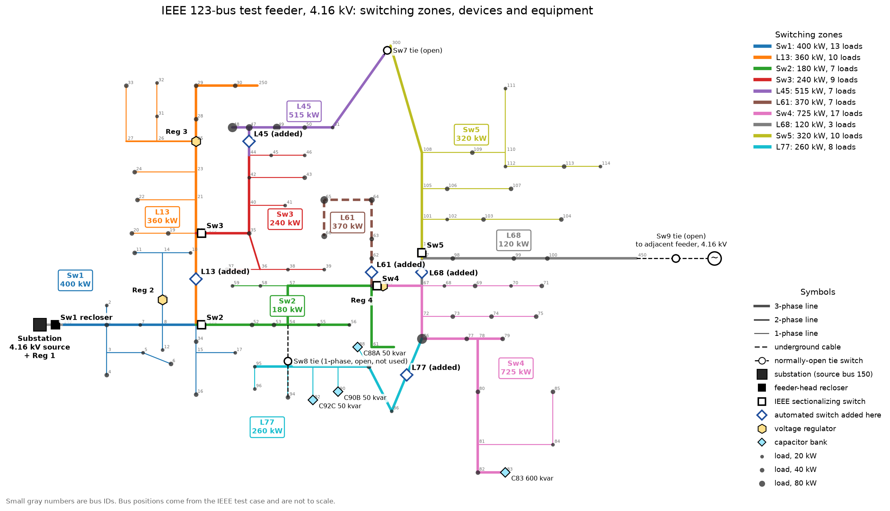

Self-Healing Feeder · Run ReportSelf-Healing Feeder · Báo cáo kết quả
Machine-learning fault location and automated restoration (FLISR) on the IEEE 123-bus distribution feeder, simulated in OpenDSS. Every number on this page is read from the latest python run.py.
Định vị sự cố bằng machine learning và tự động khôi phục cấp điện (FLISR) trên lưới phân phối IEEE 123-bus, mô phỏng bằng OpenDSS. Mọi con số trên trang được đọc từ lần chạy python run.py gần nhất.
11,448 simulated faults · run time 357 s · simulation only, not field data11,448 sự cố mô phỏng · thời gian chạy 357 giây · chỉ là mô phỏng, không phải dữ liệu thực địa · source on GitHubmã nguồn trên GitHub
What this project does · 30-second tourDự án này làm gì · xem nhanh 30 giây
When a fault blacks out a power distribution line, this project finds which section is broken and brings power back to the rest, automatically. All on a simulated feeder.
Khi một sự cố làm cả tuyến điện phân phối mất điện, dự án này tìm ra đoạn nào bị hỏng và tự động cấp điện lại cho phần còn lại. Tất cả trên một tuyến điện mô phỏng.
poweredcó điệnfed from the next feederlấy điện từ tuyến bên cạnhno powermất điệnswitch closeddao đóngswitch opendao mởSketch: 4 of the 10 zonesHình minh họa: 4 trong 10 zone
1 · A fault hits one line
A tree branch touches a line in one zone of the feeder. The study uses the IEEE 123-bus feeder, split into 10 zones by its switches; this sketch shows 4.
1 · Sự cố xảy ra trên một nhánh
Một cành cây chạm vào dây ở một zone của tuyến. Nghiên cứu dùng tuyến IEEE 123-bus, chia thành 10 zone theo các dao cắt; hình này vẽ gọn còn 4.
2 · The whole feeder goes dark
Recloser Sw1 at the substation trips and locks out. Nobody knows where the fault is, so a crew would have to patrol all 39.0 kft of line.
2 · Cả tuyến mất điện
Recloser Sw1 ở đầu tuyến cắt và khóa lại. Không ai biết sự cố nằm ở đâu, nên đội sửa chữa phải dò hết 39.0 kft đường dây.
3 · The model names the faulted zone
Machine learning reads the currents and voltages the switches recorded and names the zone. On 11,448 simulated faults it was right 97.7% of the time, tested on buses it never trained on. Conventional fault indicators: 56.1%.
3 · Mô hình chỉ ra zone bị sự cố
Mô hình machine learning đọc dòng điện và điện áp mà các dao đã ghi lại rồi chỉ ra zone. Trên 11,448 sự cố mô phỏng, mô hình đúng 97.7%, kiểm tra trên những nút chưa từng thấy khi học. Bộ chỉ báo sự cố truyền thống: 56.1%.
4 · Cut it out, power the rest
The switches on both sides of the zone open. Sw1 closes again for the zones before it, and the tie switch feeds the zones after it from the next feeder, but only if a power flow keeps every voltage within 0.95–1.05 pu and no line overloads.
4 · Cô lập zone lỗi, cấp điện phần còn lại
Hai dao hai bên zone lỗi mở ra. Sw1 đóng lại cấp điện cho các zone phía trước; dao liên lạc (tie) lấy điện từ tuyến bên cạnh cho các zone phía sau, nhưng chỉ khi tính power flow cho thấy mọi điện áp vẫn trong 0.95–1.05 pu và không đường dây nào quá tải.
5 · The crew goes straight there
The crew patrols only the named zone: 5.1 kft on average instead of 39.0 kft. Customer outage, counted in interrupted kW-minutes, falls 50.7% (simulated, with assumed switching times).
5 · Đội sửa chữa đi thẳng tới chỗ lỗi
Đội chỉ cần dò zone được chỉ ra: trung bình 5.1 kft thay vì 39.0 kft. Mức mất điện của khách hàng, tính bằng kW-phút bị gián đoạn, giảm 50.7% (mô phỏng, với thời gian thao tác giả định).
Then follow the page in this orderSau đó đọc trang theo thứ tự này
A practice control-room screen built from this study. It shows what each person in an outage does with the model's answer: who confirms the zone, who opens which switch, who patrols the line.
Một màn hình phòng điều khiển để luyện tập, dựng từ kết quả của nghiên cứu này. Nó cho thấy mỗi người trong một vụ mất điện làm gì với câu trả lời của mô hình: ai xác nhận zone, ai mở dao nào, ai đi dò đường dây.
1Pick a roleChọn vai tròDispatcher, field crew, engineer or manager. Each sees its own screen.Điều độ, đội sửa chữa, kỹ sư hoặc quản lý. Mỗi vai có màn hình riêng.
2Open a faultMở một sự cốThe map rings the zone the ML model points to, with its confidence.Bản đồ khoanh zone mà mô hình ML chỉ ra, kèm độ tin cậy.
3Follow “How to handle”Làm theo “How to handle”The highlighted box lists your steps. The map shows switches opening and load coming back.Ô được tô nổi liệt kê từng bước. Bản đồ cho thấy dao mở ra và tải được cấp điện lại.
Note: 40 faults from this run, replayed one at a time. Demo only: sign-in has no password and nothing here is connected to real equipment or live data. The page is in English.
Lưu ý: 40 sự cố lấy từ lần chạy này, phát lại từng cái. Chỉ là bản demo: đăng nhập không cần mật khẩu, không nối với thiết bị hay dữ liệu thật nào. Trang Giám sát hiện chỉ có tiếng Anh.
New here? Click any card, chart or table (or its ? button): the guide flies there, circles it and explains it. Words with a dotted underline have a short definition, and every chart shows exact numbers on hover. Questions are answered in the Q&A.
Lần đầu xem? Nhấp vào bất kỳ thẻ, biểu đồ hay bảng nào (hoặc nút ? ở góc): nhân vật hướng dẫn sẽ bay tới, khoanh lại và giải thích. Từ có gạch chân chấm chấm có định nghĩa ngắn, và mọi biểu đồ đều hiện số chính xác khi rê chuột. Các câu hỏi thường gặp nằm ở mục Hỏi đáp.
Fault zone foundTìm đúng zone sự cố
97.7%
vs 56.1% with conventional fault indicatorsso với 56.1% của bộ chỉ báo sự cố truyền thống
Average crew patrolQuãng đường tuần tra trung bình
5.1 kft
vs 39.0 kft with no fault location (−87%)so với 39.0 kft khi không định vị sự cố (−87%)
Healthy load restored by tiesPhụ tải lành được cấp lại qua tie
2,670 kW
of 7,175 kW left dark (37%), summed over 10 casestrên 7,175 kW bị mất điện (37%), cộng 10 trường hợp
Customer outageMức mất điện khách hàng (kW·minkW·phút)
−50.7%
vs manual switching; assumes 1 / 90 / 240 minso với đóng cắt thủ công; giả định 1 / 90 / 240 phút
Pass = the result meets its limit. Watch = a known weak spot to keep an eye on. Fail = something to fix before trusting the numbers.
Đạt = kết quả nằm trong giới hạn. Lưu ý = điểm yếu đã biết, cần theo dõi. Lỗi = phải sửa trước khi tin vào số liệu.
✓PassĐạt
Every fault simulation convergedMọi mô phỏng sự cố đều hội tụ100.0% of 11,448 power-flow solutions100.0% trong 11,448 lời giải trào lưu công suất
✓PassĐạt
Every restored feeder stays within limitsMọi phương án khôi phục đều trong giới hạn0.95–1.05 pu at every energized node and no line above its emergency rating, for all 10 fault zones0.95–1.05 pu ở mọi nút có điện và không đường dây nào vượt định mức khẩn cấp, cho cả 10 zone sự cố
✓PassĐạt
Every switching plan keeps the feeder radialMọi phương án đóng cắt đều giữ lưới hình tiano loops after the ties closekhông tạo vòng kín sau khi đóng tie
✓PassĐạt
ML beats the conventional methodML tốt hơn phương pháp truyền thống97.7% vs 56.1% of faults placed in the right zone97.7% so với 56.1% số sự cố được xác định đúng zone
!WatchLưu ý
High-impedance ground faultsSự cố chạm đất trở kháng caoonly 76.5% correct at 400 Ω, the known weak spot (fault current 6.2 A, OpenDSS)chỉ đúng 76.5% ở 400 Ω, điểm yếu đã biết (dòng sự cố 6.2 A, OpenDSS)
!WatchLưu ý
One sensor offlineMất một cảm biếnworst case is Sw4 offline: 83.2% correcttệ nhất khi mất Sw4: đúng 83.2%
!WatchLưu ý
Hourly study: limits at every hourTheo giờ: giới hạn ở mọi giờ74 of 8,760 hours fall on load levels where a state reaches 1.0508 pu, just above 1.05 pu (regulator tap)74 trên 8,760 giờ rơi vào mức tải có trạng thái lên tới 1.0508 pu, vượt nhẹ 1.05 pu (nấc bộ điều áp)
✓PassĐạt
Error analysis matches this runPhân tích lỗi khớp với lần chạy nàysame out-of-fold accuracy (97.74%)cùng accuracy kiểm định chéo (97.74%)
✓PassĐạt
SHA-256 provenance matches all resultsChứng thực SHA-256 khớp toàn bộ kết quả23 manifests, 51 recorded result files: 0 changed, 0 missing, 0 unrecorded23 manifest, 51 file kết quả: 0 thay đổi, 0 thiếu, 0 chưa ghi
Verification, Cryptographic Provenance & Scientific Honesty (For Reviewers & Lecturers)Chứng thực, Kiểm chứng & Độ tin cậy (Dành cho giảng viên / phản biện)#
Built directly from all 23SHA-256 provenance manifests in results/provenance/*.json (51 result files) — zero hand-typed numbers. Every experiment is simulation only; failures and domain gaps are reported right beside passing criteria.
Dựng trực tiếp từ toàn bộ 23 manifest chứng thực SHA-256 trong results/provenance/*.json (51 file kết quả) — không gõ tay số liệu. Mọi thí nghiệm đều là mô phỏng; các ca thất bại và khoảng cách miền được báo cáo trung thực ngay cạnh tiêu chí đạt.
Honest Failures, Caveats & Physical LimitsCa thất bại trung thực, lưu ý & giới hạn vật lý
✓ PASS (sim)ĐẠT (mô phỏng)
Main FLISR · IEEE 123-busFLISR chính · IEEE 123-bus
ML 97.7% vs FPI 56.1% across 11,448 faults (bus-disjoint 5-fold CV); 10/10 plans within 0.95–1.05 pu & radial; 2,670/7,175 kW restored (−50.7% kW·min under assumed switching times).ML đạt 97.7% so với FPI 56.1% trên 11,448 sự cố (CV 5 phần tách bus); 10/10 phương án trong 0.95–1.05 pu & hình tia; cấp lại 2,670/7,175 kW (−50.7% kW·phút theo thời gian đóng cắt giả định).
237/259 errors (92%) are SLG ≥ 200 Ω (76.5% at 400 Ω, 6.2 A fault current); main dataset has no NO_FAULT cases.237/259 lỗi (92%) là SLG ≥ 200 Ω (76.5% ở 400 Ω, dòng sự cố 6.2 A); bộ chính không có ca NO_FAULT.
Frozen IEEE 123-bus models pass 10 of 11 unseen OpenDSS feeders (0.416–34.5 kV, 50/60 Hz, up to 6,058 buses / 18 zones): 50 Hz EU-LV 93.3%/91.3%, IEEE 8500-Node 99.8%/99.0%, and all 6 EPRI feeders 98.0%–99.7%.Mô hình IEEE 123-bus đóng băng đạt chuẩn trên 10/11 lưới OpenDSS chưa thấy (0.416–34.5 kV, 50/60 Hz, tới 6,058 bus / 18 zone): lưới hạ áp châu Âu 50 Hz 93.3%/91.3%, IEEE 8500-Node 99.8%/99.0% và cả 6 lưới EPRI 98.0%–99.7%.
3 circuits logged transparently as out-of-scope: heavily meshed IEEE 342-Node (71 cycles), non-converged IEEE 9500-Node, and absent CIGRE MV.3 lưới ghi nhận trung thực là ngoài phạm vi: mạng mạch lưới IEEE 342-Node (71 vòng kín), IEEE 9500-Node không hội tụ OpenDSS và CIGRE MV không có trong kho chuẩn.
Phase faults (3PH/LL/LLG) still transfer zero-shot at 100.0% (GBDT) / 99.7% (GNN), and active 20% few-shot GATv2 climbs to 76.2%.Sự cố pha (3PH/LL/LLG) vẫn chuyển giao zero-shot ở mức 100.0% (GBDT) / 99.7% (GNN), và tinh chỉnh 20% trên lưới chủ động đưa GATv2 lên 76.2%.
Honest failure: passive zero-shot misses P1-Main (56.4% GBDT / 46.7% GNN vs 43.0% FPI); SLG collapses to 22.4% / 5.6% because 3-wire ungrounded delta SLG draws only capacitive current (2.36 A / 0.64% bolted). Active 37-bus zero-shot is 55.4% / 46.2% (A2-Partial).Thất bại trung thực: zero-shot thụ động trượt tiêu chí P1-Main (56.4% GBDT / 46.7% GNN so với 43.0% FPI); SLG sụp xuống 22.4% / 5.6% vì lưới 3 dây delta không nối đất chỉ có dòng điện dung (2.36 A / 0.64% khi chạm trực tiếp). Lưới chủ động 37-bus zero-shot đạt 55.4% / 46.2% (A2-Partial).
! LIMIT (Domain gap)GIỚI HẠN (Khoảng cách miền)
Real VeHIF Vegetation Arcs vs. EmanuelHồ quang cây thật VeHIF vs. Emanuel
Background alarm rate stayed 0.0% and 2–5 A vegetation arcs reached 94.7% in the companion Tier-1 check (source: research/hif-fusion/PLAN.md §6.2).Tỉ lệ báo động giả nền giữ ở 0.0% và hồ quang cây 2–5 A đạt 94.7% trong đối chiếu Tầng 1 của dự án liên kết (nguồn: research/hif-fusion/PLAN.md §6.2).
Honest domain gap: running the exact frozen 504 B model_int8.npz without retraining on real 22 kV 50 Hz VeHIF recordings dropped standalone detection from 94.7% (synthetic Emanuel) to 56.0% (36.2% at 0–1 A) because real vegetation arcs are steadier and less asymmetric. Simulated gains do not prove field accuracy.Khoảng cách miền trung thực: chạy đúng model_int8.npz 504 B đóng băng (không huấn luyện lại) trên bản ghi sự cố cây thật 22 kV 50 Hz VeHIF làm tỉ lệ phát hiện độc lập giảm từ 94.7% (Emanuel mô phỏng) xuống 56.0% (36.2% ở 0–1 A) do hồ quang cây thật ổn định và ít bất đối xứng hơn. Kết quả mô phỏng chưa chứng minh hiệu năng thực địa.
! PARTIAL / LIMITMỘT PHẦN / GIỚI HẠN
Stage-2 Bus Ranking & Conformal TransferXếp hạng bus Stage-2 & Conformal liên lưới
Zero-training 3-phase Takagi reactance reaches 69.0% top-3 (123-bus) & 87.4% (34-bus); aps_rand95% hits 95.0% coverage on 123-bus.Điện kháng Takagi 3 pha không cần học đạt 69.0% top-3 (123-bus) & 87.4% (34-bus); aps_rand95% đạt độ phủ 95.0% trên 123-bus.
BusGraphGNN loses to physics on 123-bus (38.5% vs 69.0%); parallel laterals at ΔX₁ = 0.000 Ω are physically indistinguishable. Pre-registered aps_det saturates (6.37 labels/set); frozen 123-bus q̂ misses 95% on unseen 34-bus (81.4%) & 37-bus (47.4%) without local calibration.BusGraphGNN thua phương pháp vật lý trên 123-bus (38.5% so với 69.0%); hai nhánh song song có ΔX₁ = 0.000 Ω không thể tách bằng cảm biến đầu zone. aps_det đăng ký trước bị bão hòa (6.37 nhãn/tập); ngưỡng q̂ từ 123-bus không giữ được 95% trên 34-bus (81.4%) và 37-bus (47.4%) nếu không hiệu chỉnh tại lưới đích.
! SCOPE LIMITGIỚI HẠN PHẠM VI
Simulation Only · No Live Utility SCADAThuần mô phỏng · Không nối SCADA thật
Every feeder, fault, LTspice waveform, and Wokwi ESP32 panel replay is reproducible from open-source code and published JSON/CSV outputs.Mọi lưới điện, sự cố, dạng sóng LTspice và bảng điều khiển ESP32 Wokwi đều tái tạo được từ mã nguồn mở và file JSON/CSV công khai.
Zero field utility event recordings; MQTT ran end-to-end only with the simulated Wokwi panel (TimescaleDB ingestion path not run end-to-end); hourly restoration uses regional PJM AEP load shape, not single-feeder measurements.Không có bản ghi sự cố thực địa từ công ty điện; MQTT mới chạy nối thông với bảng ESP32 mô phỏng trên Wokwi (nhánh lưu TimescaleDB chưa chạy nối thông); khôi phục theo giờ dùng đường tải vùng PJM AEP, không phải số đo riêng một tuyến.
Static-Page Security, Privacy & Open Data AccessCam kết Bảo mật Trang tĩnh, Quyền riêng tư & Dữ liệu Mở
Pure static GitHub Pages: this report (docs/index.html) has no backend server, no database, no login/password collection, no analytics cookies, and zero tracking beacons.
Zero secrets or embedded API keys: the study calls no external API; harness/check.py (check_secrets) and .gitignore / .git/info/exclude block .env, kaggle.json, API tokens, and local working files from entering Git. Only localStorage keys shf-lang and shf-theme are stored locally in your browser; optional read-only CDN assets (three.js, KaTeX) load strictly for 3D and formula rendering.
Direct data downloads (52 files in docs/data/): every JSON, CSV, and PDF artifact behind the numbers is published alongside this page — jump to all 52 direct downloads or inspect the raw manifests in results/provenance/.
GitHub Pages thuần tĩnh: trang báo cáo này (docs/index.html) không có backend, không cơ sở dữ liệu, không thu thập tài khoản/mật khẩu, không cookie theo dõi hay công cụ phân tích hành vi.
Không nhúng API key hay thông tin nhạy cảm: nghiên cứu không gọi API bên ngoài; harness/check.py (check_secrets) cùng .gitignore / .git/info/exclude chặn chắc .env, kaggle.json, token và file nội bộ khỏi Git. Trình duyệt chỉ lưu cục bộ tùy chọn ngôn ngữ (shf-lang) và giao diện (shf-theme); thư viện tĩnh CDN chỉ đọc (three.js, KaTeX) chỉ phục vụ hiển thị 3D và công thức.
Tải trực tiếp toàn bộ dữ liệu (52 file trong docs/data/): mọi file JSON, CSV và PDF đứng sau các con số đều được công khai cùng trang này — tới danh sách tải trực tiếp 52 file hoặc xem trực tiếp manifest gốc tại results/provenance/.
The whole feeder, built from the study's own data. Drag to rotate and click any zone, switch or load column: it lifts out of the model and the guide explains it. Tour the zones walks through all 10; the 2D map shows the same feeder as a flat drawing.
Toàn bộ lưới, dựng từ chính dữ liệu của nghiên cứu. Kéo để xoay và nhấp vào bất kỳ zone, dao hay cột tải nào: phần đó nổi lên khỏi mô hình và nhân vật hướng dẫn sẽ giải thích. Đi qua các zone giới thiệu lần lượt cả 10 zone; bản đồ 2D vẽ cùng lưới đó dạng phẳng.
Labels:Nhãn:

Drag to rotate · click the model, then scroll to zoom · click a zone, switch or load column
Kéo để xoay · nhấp vào mô hình rồi cuộn để phóng to · nhấp vào zone, dao hay cột tải
Column = load kW · one wire per phase · grey can on a pole = pole-top transformer · grey tank with six bushings = recloser · box with antenna = added switch · red raised blades = open tie · round tanks with fins = regulators · pale cans = capacitors · fenced yard = substation · equipment models built in SolidWorks (generic, illustrative sizes, not a manufacturer's design; switch blades stay drawn so the fault replay can open them) · Technical drawings (PDF, dimensioned): recloser, auto switch, regulator, capacitor bank, pole-top transformer, substation
Cột = tải kW · mỗi pha một dây · bình xám trên trụ = máy biến áp trên trụ · thùng xám 6 sứ = recloser · hộp có ăng-ten = dao thêm vào · lưỡi đỏ dựng lên = dao liên lạc mở · thùng tròn có cánh = điều áp · bình nhạt = tụ bù · sân có rào = trạm nguồn · mô hình thiết bị dựng bằng SolidWorks (mẫu chung, kích thước minh hoạ, không phải thiết kế của hãng nào; lưỡi dao vẫn vẽ bằng code để phần phát lại sự cố mở được) · Bản vẽ kỹ thuật (PDF, có kích thước): recloser, dao tự động, điều áp, giàn tụ, MBA trên cột, trạm nguồn
Red column = a bus where faults get misplaced (taller = more, redder = higher rate) · green dot = no mistakes · arrow = true zone → wrong guess (thicker = more faults). Click any of them.
Cột đỏ = bus hay bị đoán sai (cao hơn = nhiều hơn, đỏ hơn = tỉ lệ cao hơn) · chấm xanh = không sai lần nào · mũi tên = zone thật → zone bị đoán nhầm (dày hơn = nhiều hơn). Nhấp vào để xem phân tích.
Click any line to put a fault there, or pick one above. Lamps: green = closed, red = open · grey = no power · red zone = faulted · orange arrow = the model's wrong guess. Use Next to step through.
Nhấp vào bất kỳ đường dây nào để đặt sự cố, hoặc chọn ở trên. Đèn: xanh = đóng, đỏ = mở · xám = mất điện · zone đỏ = bị sự cố · mũi tên cam = model đoán sai. Bấm Tiếp để xem từng bước.
After the feeder-head recloser locks out, which of the 10 zones holds the fault? Accuracy is measured on buses the model never saw in training. The chart shows where each method breaks down: as the ground-fault resistance rises, the fault current shrinks toward the size of normal load swings.
Sau khi recloser đầu tuyến cắt hẳn, sự cố nằm ở zone nào trong 10 zone? Độ chính xác được đo trên các bus mà model chưa từng thấy khi huấn luyện. Biểu đồ cho thấy mỗi phương pháp bắt đầu sai ở đâu: điện trở chạm đất càng lớn, dòng sự cố càng nhỏ, tiến dần tới mức dao động bình thường của phụ tải.
In shortTóm lạiML puts 97.7% of faults in the right zone, against 56.1% for fault indicators, and keeps working as faults get weaker: 98.4% vs 8.4% at 100 Ω.ML xác định đúng zone cho 97.7% số sự cố, so với 56.1% của bộ chỉ báo sự cố, và vẫn hoạt động khi sự cố yếu dần: 98.4% so với 8.4% ở 100 Ω.
Conventional FPIFPI truyền thốngML, magnitudes onlyML, chỉ biên độML, full featuresML, đủ đặc trưng
Show as tableXem dạng bảng
Ω
Conventional FPIFPI truyền thống
ML, magnitudes onlyML, chỉ biên độ
ML, full featuresML, đủ đặc trưng
0.01
29.7%
99.9%
100.0%
1
67.0%
99.9%
100.0%
5
90.3%
100.0%
100.0%
10
86.3%
99.9%
99.9%
25
53.7%
98.0%
99.9%
50
28.4%
91.8%
99.9%
100
8.4%
70.8%
98.4%
200
2.3%
38.0%
93.7%
400
1.0%
22.4%
76.5%
By fault typeTheo loại sự cố (SLG, LL, LLG, 3PH)
MethodPhương pháp
All faultsTất cả sự cố
3PH
LL
LLG
SLG
Conventional FPIFPI truyền thống
56.1%
96.7%
96.0%
62.2%
40.8%
ML, magnitudes onlyML, chỉ biên độ
87.5%
100.0%
99.8%
100.0%
80.1%
ML, full featuresML, đủ đặc trưng
97.7%
100.0%
99.8%
99.9%
96.5%
If one sensor stops reporting (ML, full features)Khi một cảm biến ngừng gửi số liệu (ML, đủ đặc trưng)
2b · In the time domain (LTspice)2b · Theo thời gian (LTspice)
OpenDSS solves 60 Hz phasors: one steady number per current. Three LTspice circuits, written from the same feeder model at bus 60, show the waveform a recloser would actually record.
OpenDSS giải bài toán pha 60 Hz: mỗi dòng điện chỉ là một con số ổn định. Ba mạch LTspice, viết từ cùng mô hình lưới tại bus 60, cho thấy dạng sóng mà recloser thực sự ghi được.
A bolted fault starts with a DC offsetSự cố trực tiếp bắt đầu với DC lệch
Fault starts at the worst instant (largest DC offset)Sự cố bắt đầu ở thời điểm xấu nhất (DC lệch lớn nhất)Fault starts with no DC offsetSự cố bắt đầu không có DC lệch
Steady current 6,119 A RMS (6,276 A in the full OpenDSS fault). At the worst instant the first peak is 10,067 A instead of 8,753 A (asymmetry 1.16); the DC offset dies out with a time constant of 4.9 ms. Through a 1,000:1 CT and the filter the 12-bit ADC pin swings 0.45–3.05 V (0 clipped samples, 5.8 A per count), and a one-cycle DFT is within 5% of the steady value 24 ms after the fault.
Dòng ổn định 6,119 A hiệu dụng (6,276 A trong mô phỏng OpenDSS đầy đủ). Ở thời điểm xấu nhất, đỉnh đầu tiên là 10,067 A thay vì 8,753 A (hệ số bất đối xứng 1.16); DC lệch tắt dần với hằng số thời gian 4.9 ms. Qua CT 1,000:1 và bộ lọc, chân ADC 12 bit dao động 0.45–3.05 V (0 mẫu bị cắt, 5.8 A mỗi mức), và DFT một chu kỳ sai dưới 5% so với giá trị ổn định sau 24 ms.
A high-impedance fault arcsSự cố trở kháng cao có hồ quang
Arcing fault (400 Ω RMS-equivalent)Sự cố có hồ quang (tương đương 400 Ω về RMS)Fixed 400 Ω, as in the fault sweepĐiện trở cố định 400 Ω, như trong mô phỏng sự cố
Same RMS currentCùng dòng hiệu dụng
100 Ω
400 Ω
RMS current, arc / fixedDòng hiệu dụng, hồ quang / cố định
23.94 / 23.95 A
6.00 / 6.00 A
60 Hz part of the arc, vs fixedThành phần 60 Hz của hồ quang, so với cố định
97.8%
97.8%
3rd harmonic of the arcHài bậc 3 của hồ quang
18.8%
18.8%
5th harmonic of the arcHài bậc 5 của hồ quang
8.3%
8.3%
DC part of the arcThành phần DC của hồ quang
0.65 A
0.16 A
Fault current vs feeder-head loadDòng sự cố so với dòng tải đầu tuyến
4.7%
1.2%
ADC counts the fault current spansSố mức ADC mà dòng sự cố chiếm
13
3
The fault sweep models a high-impedance fault as a fixed resistance. A real one arcs: it conducts only while the voltage is above the arc voltage (two-diode model, Emanuel et al. 1990; arc voltages 30% and 33% of the phase peak are illustrative). Matched to the same RMS current, the arc puts 97.8% of it at 60 Hz and adds harmonics and a small DC part. At 400 Ω the fault draws 6.0 A, 1.2% of the 515 A the feeder head carries before the fault, and spans 3 ADC counts. The fault sweep already captures how small this current is; it leaves out the harmonics of the arc.
Mô phỏng sự cố coi sự cố trở kháng cao là một điện trở cố định. Ngoài đời nó có hồ quang: chỉ dẫn điện khi điện áp vượt điện áp hồ quang (mô hình hai diode, Emanuel và cộng sự 1990; điện áp hồ quang 30% và 33% điện áp đỉnh pha là giả định để minh hoạ). Khi chỉnh cho cùng dòng hiệu dụng, hồ quang chỉ có 97.8% ở tần số 60 Hz, thêm sóng hài và một phần DC nhỏ. Ở 400 Ω dòng sự cố là 6.0 A, bằng 1.2% dòng 515 A chạy ở đầu tuyến trước sự cố, và chỉ chiếm 3 mức ADC. Mô phỏng sự cố đã thể hiện được dòng này nhỏ thế nào; cái nó bỏ qua là sóng hài của hồ quang.
2c · Transfer to unseen feeders, bus ranking & active grids (IEEE 34-bus & 37-bus)2c · Chuyển sang lưới mới, tìm từng bus & lưới có điện mặt trời (IEEE 34-bus & 37-bus)
The classifier in section 2 is tied to the 10 named devices of the IEEE 123-bus feeder, so it cannot run on another feeder. Representing each event as a graph of relative quantities (current change relative to pre-fault load, per-unit voltages, phasor flow directions, and zone connectivity) lets a model trained only on IEEE 123-bus (4.16 kV) run unchanged on the unseen IEEE 34-bus feeder (24.9 kV, 7 switches placed by a fixed 5%-load branch rule) and on a third feeder, the unseen urban underground IEEE 37-bus feeder (4.8 kV, 3-wire ungrounded delta, 10 switches placed by the same 5%-load rule). All results below are OpenDSS simulations.
Bộ phân loại ở mục 2 gắn cứng với 10 thiết bị có tên của lưới IEEE 123-bus nên không chạy được trên lưới khác. Khi biểu diễn mỗi sự kiện thành đồ thị dùng đại lượng tương đối (mức thay đổi dòng so với tải trước sự cố, điện áp per-unit, hướng dòng công suất và liên kết giữa các zone), model chỉ học trên IEEE 123-bus (4.16 kV) có thể chạy thẳng trên lưới IEEE 34-bus chưa từng thấy (24.9 kV, 7 dao đặt theo quy tắc nhánh ≥ 5% tải cố định trước) và trên lưới thứ 3 là lưới cáp ngầm đô thị IEEE 37-bus chưa từng thấy (4.8 kV, 3 dây delta không nối đất, 10 dao đặt theo cùng quy tắc nhánh ≥ 5% tải). Toàn bộ kết quả dưới đây là mô phỏng OpenDSS.
Zone transfer: passive radial vs active DER + reconfigured/looped gridsChuyển giao cấp zone: lưới hình tia thụ động so với lưới có DER + đổi cấu trúc/vòng kín
Passive radial · FPI ruleHình tia thụ động · Luật FPI
55.5%
55.5%
–
43.0%phasepha 98.2% · SLG 0.0%
–
50.7% / 49.0% / 38.7%
Passive radial · Per-node GBDTHình tia thụ động · GBDT theo nút
98.3%
99.8%
96.4% / 99.2%
56.4%phasepha 100.0% · SLG 22.4%
55.1% / 91.4%
89.4% / 88.4% / 48.7%
Passive radial · Zone-tree GNN (2L)Hình tia thụ động · GNN cây zone (2 lớp)
98.1%
99.3%
98.7% / 98.3%
46.7%phasepha 99.7% · SLG 5.6%
66.0% / 88.0%
90.2% / 85.8% / 44.2%
Active DER + loops + HIF + NO_FAULT · FPILưới có DER + vòng kín + HIF + không sự cố · FPI
40.7% (FPR 21.2%)
47.6% (FPR 10.2%)
–
44.5% (FPR 0.0%)
–
39.0% / 44.2% / 41.6%
Active DER + loops + HIF + NO_FAULT · Per-node GBDTLưới có DER + vòng kín + HIF + không sự cố · GBDT theo nút
93.9% (FPR 13.9%)
83.8%
83.1% / 91.8%
55.4% (FPR 3.4%)
62.0% / 88.3%
86.1% / 72.4% / 49.6%
Active DER + loops + HIF + NO_FAULT · ActiveGridGATv2Lưới có DER + vòng kín + HIF + không sự cố · ActiveGridGATv2
95.8% (FPR 6.5%)
77.6%
89.1% / 93.1%
46.2% (FPR 11.8%)
76.2% / 85.7%
89.1% / 71.5% / 44.3%
Honest physical takeaways: (1) On the passive radial 0.01–400 Ω sweep, zero-shot transfer to IEEE 34-bus scores 99.8% (per-node GBDT) and 99.3% (tree GNN) vs 55.5% for FPI — higher than on 123-bus because the fault current is large next to the load: at nominal load a 400 Ω ground fault draws a median 31.7 A on 24.9 kV (61.1% of the 51.8 A feeder-head current) but 6.2 A on 4.16 kV (1.0% of 631.5 A). On a passive radial tree, per-node GBDT transfers at least as well as the GNN. (2) Adding 0–50% current-limited inverter DERs (Model=7), back-fed reconfigurations, closed-loop operation, SLG faults up to 10,000 Ω on 24.9 kV, and non-fault transients (capacitor switching, PV cloud drops, load steps) drops FPI to 40.7% on 123-bus and 47.6% on 34-bus. Here the bidirectional edge-aware attention network ActiveGridGATv2 outperforms per-node GBDT on active 123-bus (95.8% vs 93.9%, cutting non-fault false trips in half from 13.9% to 6.5%), at 20% few-shot on 34-bus (89.1% vs 83.1%), and in-domain on 34-bus (93.1% vs 91.8%), while GBDT is higher in pure 0-shot (83.8% vs 77.6%) where sudden +30–80% load steps mimic 2.5–10 kΩ HIFs. (3) Third unseen feeder — urban underground IEEE 37-bus (4.8 kV, 3-wire ungrounded delta, 10 zones, 36 buses, 5,184 faults): passive zero-shot drops to 56.4% (GBDT) and 46.7% (GNN) vs 43.0% (FPI) — missing the pre-committed P1-Main bar. Physical cause: on phase faults (3PH/LL/LLG), frozen 123-bus models still transfer almost perfectly (100.0% GBDT, 99.7% GNN vs 98.2% FPI) because phase currents circulate directly through the 4.8 kV delta cables. The drop comes entirely from SLG ground faults (0.0% FPI, 22.4% GBDT, 5.6% GNN): without a grounded neutral, SLG current returns only through distributed cable capacitance — measured in OpenDSS at median 2.36 A (0.64% of the 369.5 A feeder-head current) even for a bolted 0.01 Ω fault, and 2.23 A (0.60%) at 400 Ω — while unfaulted phase-to-ground voltages shift toward √3 pu, a regime never seen on grounded 4-wire 123-bus. In-domain 5-fold CV on 37-bus reaches 91.4% (GBDT, SLG 85.0%) and 88.0% (GNN, SLG 79.6%), showing the relative features do contain localizable delta signatures once trained on ungrounded data; with 20% few-shot (7 buses), Zone-tree GNN climbs to 66.0% while warm-start GBDT overfits the 7 sampled buses (55.1%). On active IEEE 37-bus (DER 0–50%, reconfig_tie/looped_tie, NO_FAULT), FPI scores 44.5% (FPR 0.0%), zero-shot GBDT 55.4% and ActiveGridGATv2 46.2% (20% few-shot 62.0% / 76.2%; in-domain 88.3% / 85.7%).
Nhận xét vật lý trung thực: (1) Trên lưới hình tia thụ động dải 0.01–400 Ω, chuyển giao zero-shot sang IEEE 34-bus đạt 99.8% (GBDT theo nút) và 99.3% (GNN cây) so với 55.5% của FPI — cao hơn trên 123-bus vì dòng sự cố lớn so với dòng tải: ở tải định mức, sự cố chạm đất 400 Ω kéo trung vị 31.7 A ở 24.9 kV (61.1% dòng đầu tuyến 51.8 A) nhưng chỉ 6.2 A ở 4.16 kV (1.0% của 631.5 A). Trên cây hình tia thụ động, GBDT theo nút chuyển lưới ngang/nhỉnh hơn GNN. (2) Khi thêm 0–50% nguồn nghịch lưu điện mặt trời giới hạn dòng (Model=7), cấu hình cấp ngược, vận hành vòng kín, sự cố chạm đất tới 10,000 Ω ở 24.9 kV và quá độ không sự cố (đóng cắt tụ bù, mây che PV, nhảy tải), FPI sụp xuống 40.7% trên 123-bus và 47.6% trên 34-bus. Lúc này mạng chú ý đồ thị hai chiều ActiveGridGATv2 vượt GBDT theo nút trên lưới 123-bus (95.8% so với 93.9%, giảm một nửa tỉ lệ cắt nhầm từ 13.9% xuống 6.5%), ở chế độ tinh chỉnh 20% trên 34-bus (89.1% so với 83.1%), và khi học tại chỗ trên 34-bus (93.1% so với 91.8%); còn ở zero-shot thuần túy thì GBDT cao hơn (83.8% so với 77.6%) do bước nhảy tải +30–80% có biên độ giống sự cố 2.5–10 kΩ. (3) Lưới chưa thấy thứ 3 — cáp ngầm đô thị IEEE 37-bus (4.8 kV, 3 dây delta không nối đất, 10 zone, 36 bus, 5,184 sự cố): zero-shot thụ động giảm xuống 56.4% (GBDT) và 46.7% (GNN) so với 43.0% (FPI) — không đạt tiêu chí P1-Main đăng ký trước. Nguyên nhân vật lý: với sự cố giữa các pha (3PH/LL/LLG), mô hình giữ nguyên từ 123-bus vẫn chuyển giao gần như hoàn hảo (100.0% GBDT, 99.7% GNN so với 98.2% FPI) vì dòng pha khép mạch trực tiếp qua cáp delta 4.8 kV. Toàn bộ mức sụt giảm nằm ở sự cố chạm đất SLG (0.0% FPI, 22.4% GBDT, 5.6% GNN): vì không có dây trung tính nối đất, dòng SLG chỉ hồi về qua điện dung phân bố của cáp ngầm — đo trong OpenDSS chỉ đạt trung vị 2.36 A (0.64% dòng đầu tuyến 369.5 A) ngay cả khi chạm đất trực tiếp 0.01 Ω, và 2.23 A (0.60%) ở 400 Ω — đồng thời điện áp pha lành so với đất dâng về √3 pu — trạng thái chưa từng có trong dữ liệu huấn luyện 4 dây nối đất 123-bus. Học tại chỗ (CV 5 phần) trên 37-bus đạt 91.4% (GBDT, SLG 85.0%) và 88.0% (GNN, SLG 79.6%), chứng tỏ bộ đặc trưng tương đối vẫn giữ được dấu hiệu định vị khi có dữ liệu lưới delta; tinh chỉnh 20% (7 bus) đưa GNN lên 66.0%, còn GBDT warm-start bị quá khớp 7 bus mẫu (55.1%). Trên lưới chủ động IEEE 37-bus (DER 0–50%, reconfig_tie/looped_tie, NO_FAULT), FPI đạt 44.5% (FPR 0.0%), zero-shot GBDT đạt 55.4% và ActiveGridGATv2 đạt 46.2% (tinh chỉnh 20%62.0% / 76.2%; học tại chỗ 88.3% / 85.7%).
Stage 2: from predicted zone down to individual busStage 2: từ zone dự đoán xuống tới từng bus
Stage-2 bus ranker (inside predicted zone)Bộ xếp hạng bus Stage 2 (trong zone dự đoán)
IEEE 123-bus top-1
IEEE 123-bus top-3
IEEE 34-bus top-1
IEEE 34-bus top-3
IEEE 37-bus top-1 (4.8 kV delta)
IEEE 37-bus top-3 (4.8 kV delta)
Random bus in zone (baseline)Chọn ngẫu nhiên bus trong zone
8.8%
26.4%
19.3%
50.8%
17.0%phasepha 27.8%
42.1%phasepha 69.4%
3-phase Takagi reactance (OpenDSS 3×3 Z, zero training)Điện kháng Takagi 3 pha (ma trận 3×3 OpenDSS, không cần học)
46.9%
69.0%
57.5%
87.4%
38.4%phasepha 75.0%
53.4%phasepha 94.4%
Bus-graph GNN (5-fold CV on 123 / zero-shot on 34 & 37)GNN đồ thị bus (CV 5 phần trên 123 / zero-shot trên 34 & 37)
17.8%
38.5%
50.8%
85.8%
37.2%phasepha 72.8%
53.9%phasepha 95.2%
Physics beats ML at the bus level: ranking buses inside the predicted zone by 3-phase Takagi reactance using OpenDSS 3×3 line impedances (zero training) reaches 46.9% top-1 / 69.0% top-3 on 123-bus and 57.5% / 87.4% on 34-bus, outperforming a bus-graph GNN (17.8% / 38.5% under GroupKFold by bus on 123-bus, where held-out test buses are suppressed as unseen positive labels). The top confused bus pairs (61→61s, 160→160r, 832→888) have ΔX₁ = 0.000 Ω: with sensors only at zone boundaries, parallel laterals at the same electrical distance cannot be separated without extra sensors. On underground delta IEEE 37-bus, both zero-training Takagi (75.0% top-1 / 94.4% top-3 on phase faults vs 69.4% random) and zero-shot BusGraphGNN (95.2% phase top-3) clear the phase-fault bar (P2-Partial), while overall top-3 drops to 53.4% (Takagi) and 53.9% (GNN) vs 42.1% random because ungrounded capacitive SLG breaks the grounded-loop Takagi equation (SLG top-3 21.5%) and compact underground cables have tiny adjacent-bus reactance spacing (701→702 ΔX₁ = 0.0599 Ω).
Ở cấp bus, vật lý thắng ML: xếp hạng bus trong zone dự đoán bằng điện kháng Takagi 3 pha dùng ma trận đường dây 3×3 từ OpenDSS (không cần học) đạt 46.9% top-1 / 69.0% top-3 trên 123-bus và 57.5% / 87.4% trên 34-bus, vượt xa GNN đồ thị bus (17.8% / 38.5% khi kiểm định GroupKFold theo bus trên 123-bus, do các bus kiểm tra chưa từng xuất hiện làm nhãn dương khi học). Các cặp bus hay nhầm nhất (61→61s, 160→160r, 832→888) đều có ΔX₁ = 0.000 Ω: khi chỉ đặt cảm biến ở đầu zone, hai nhánh có cùng khoảng cách điện là không thể phân biệt nếu không thêm cảm biến. Trên lưới cáp ngầm delta IEEE 37-bus, cả Takagi không cần học (75.0% top-1 / 94.4% top-3 trên sự cố pha so với 69.4% ngẫu nhiên) lẫn BusGraphGNN zero-shot (95.2% top-3 sự cố pha) đều đạt ngưỡng trên sự cố pha (P2-Partial), còn top-3 tổng thể giảm về 53.4% (Takagi) và 53.9% (GNN) so với 42.1% ngẫu nhiên vì dòng SLG điện dung trên lưới delta phá vỡ phương trình Takagi vòng đất (top-3 SLG 21.5%) và cáp ngầm ngắn có chênh lệch điện kháng giữa hai bus liền kề rất nhỏ (701→702 ΔX₁ = 0.0599 Ω).
Per-node GBDT · pre-registered APSGBDT theo nút · APS đăng ký trước
100.0%
4.26
6.3%
100.0%
0.0%
99.9%
100.0% (100.0%)
100.0%
100.0% (100.0%)
Per-node GBDT · randomized APS (post-hoc)GBDT theo nút · APS ngẫu nhiên (kiểm tra sau)
95.0%
1.28
82.2%
99.2%
0.9%
91.1%
94.2% (91.3%)
81.1%
93.9% (88.9%)
Read this as a decision-support gate in simulation, not a guarantee. The pre-registered score (deterministic APS) saturates: at a 95% target its sets hold 6.37 of 11 labels on average and cover 100.0% of events, so the rule "act only on a one-label set" acts on just 22.6% of events (ActiveGridGATv2). Criterion C3 is met as written, but that coverage is close to trivial. A post-hoc check on the same probabilities and splits with randomized APS (Romano et al. 2020) hits the target on the training feeder: 95.0% coverage with 1.09 labels per set; one-label sets cover 89.2% of events, are right 99.1% of the time, and 1.1% of non-fault events would trip. It does not carry over to the unseen 34-bus feeder: the 123-bus threshold covers 81.4% (ActiveGridGATv2) and 91.1% (GBDT) against the 95% target, and recalibrating on 2 of its fault buses reaches 92.0% and 94.2% on average (worst of 10 draws 81.5% and 91.3%). The guarantee needs calibration data from the feeder it is used on. LAC, the third score tried, also hits 95% on 123-bus but covers only 76.2% on 34-bus with the 123-bus threshold. On active IEEE 37-bus (randomized APS at 95%), the 123-bus threshold covers 47.4% (ActiveGridGATv2) and 81.1% (GBDT); recalibrating on 2 of its fault buses averages 94.1% and 93.9% (worst 86.2% and 88.9%).
Đây là một cổng hỗ trợ quyết định trong mô phỏng, không phải bảo chứng. Cách tính đã đăng ký trước (APS xác định) bị bão hòa: ở mục tiêu 95%, mỗi tập trung bình chứa 6.37 trên 11 nhãn và phủ 100.0% số ca, nên luật "chỉ tự đóng cắt khi tập có 1 nhãn" chỉ áp dụng được cho 22.6% số ca (ActiveGridGATv2). Tiêu chí C3 đạt đúng như chữ viết, nhưng độ phủ đó gần như vô nghĩa. Kiểm tra sau trên cùng xác suất và cùng cách chia bằng APS ngẫu nhiên (Romano và cộng sự 2020) đạt đúng mục tiêu trên lưới đã học: độ phủ 95.0% với 1.09 nhãn mỗi tập; tập 1 nhãn chiếm 89.2% số ca, đúng 99.1%, và 1.1% số ca không sự cố sẽ bị cắt nhầm. Kết quả này không giữ được khi sang lưới 34-bus chưa thấy: ngưỡng của 123-bus chỉ phủ 81.4% (ActiveGridGATv2) và 91.1% (GBDT) so với mục tiêu 95%; hiệu chỉnh lại bằng 2 bus sự cố của lưới đó đạt trung bình 92.0% và 94.2% (tệ nhất trong 10 lần rút: 81.5% và 91.3%). Muốn có bảo chứng thì phải hiệu chỉnh bằng dữ liệu của chính lưới đang dùng. LAC, cách tính thứ ba, cũng đạt 95% trên 123-bus nhưng chỉ phủ 76.2% trên 34-bus khi dùng ngưỡng của 123-bus. Trên lưới chủ động IEEE 37-bus (APS ngẫu nhiên ở 95%), ngưỡng từ 123-bus phủ 47.4% (ActiveGridGATv2) và 81.1% (GBDT); hiệu chỉnh lại bằng 2 bus sự cố đạt trung bình 94.1% và 93.9% (tệ nhất 86.2% và 88.9%).
Broader generalization proof (simulation only): Using the exact frozen IEEE 123-bus models (zero retraining) across 11 unseen OpenDSS feeders spanning 0.416–34.5 kV, 50 Hz & 60 Hz, and up to 6,058 buses / 18 zones, 10 of 11 unseen feeders pass zero-shot — including 93.3% (GBDT) / 91.3% (GNN) on the 50 Hz European LV cable feeder (vs 60.3% FPI), 99.8% / 99.0% on IEEE 8500-Node (vs 44.1% FPI), and 98.0%–99.7% across all six utility-scale EPRI feeders (Ckt5, Ckt7, Ckt24, J1, K1, M1). On all six large EPRI feeders, the Zone-tree GNN beats per-node GBDT whenever one sensor is offline (e.g., 94.3% vs 90.5% on 18-zone EPRI Ckt7). The only transfer breakdown is ungrounded 3-wire delta IEEE 37-bus SLG, while heavily meshed IEEE 342-Node (71 cycles) and non-converged IEEE 9500-Node are recorded transparently as out-of-scope.
Bằng chứng tổng quát hóa đa lưới (thuần mô phỏng OpenDSS): Dùng đúng cặp mô hình IEEE 123-bus đóng băng (không huấn luyện lại) chạy song song trên 3 máy ảo Kaggle qua 11 lưới chưa từng thấy (0.416–34.5 kV, cả 50 Hz & 60 Hz, tới 6,058 bus / 18 zone), 10 trên 11 lưới đạt chuẩn zero-shot — gồm 93.3% (GBDT) / 91.3% (GNN) trên lưới cáp hạ áp châu Âu 50 Hz (so với 60.3% FPI), 99.8% / 99.0% trên lưới khổng lồ IEEE 8500-Node (so với 44.1% FPI), và 98.0%–99.7% trên cả 6 lưới thực tế của EPRI (Ckt5, Ckt7, Ckt24, J1, K1, M1). Trên cả 6 lưới EPRI lớn, GNN cây zone đều vượt GBDT khi mất 1 cảm biến (ví dụ 94.3% so với 90.5% trên EPRI Ckt7 18 zone). Điểm gãy duy nhất là sự cố chạm đất SLG trên lưới 3 dây delta không nối đất IEEE 37-bus; còn mạng mạch lưới IEEE 342-Node (71 vòng kín) và IEEE 9500-Node không hội tụ cơ sở được ghi nhận trung thực là ngoài phạm vi.
At 60 Hz alone, high-impedance ground faults (SLG 200–400 Ω) are the dominant error source on IEEE 123-bus (76.5% at 400 Ω) because the fault draws only 6.2 A (1.0% of the 631.5 A head current), buried inside 1% CT noise. This two-tier architecture pairs a frozen Edge ESP32-S3 HIF-Sensor at every recloser/switch — 4th-order Butterworth anti-aliasing filter (LTspice 2,045.1 Hz / Python 2,047.9 Hz), 12-bit ADC at 15.36 kHz, 16 harmonic/asymmetry/cycle-variation features over K = 8 cycles, and a 417-parameter / 504-byte int8 Tiny MLP with PERSIST = 3 — with feeder-wide Graph FLISR (PerNodeGBDT, ZoneTreeGNN, and ActiveGridGATv2 with diff_p_hif on edges).
Chỉ dùng pha 60 Hz, sự cố chạm đất trở kháng cao (SLG 200–400 Ω) là nguồn lỗi lớn nhất trên IEEE 123-bus (76.5% ở 400 Ω) vì dòng sự cố chỉ đạt 6.2 A (1.0% dòng đầu tuyến 631.5 A), chìm trong nhiễu CT 1%. Kiến trúc 2 tầng này ghép cảm biến biên ESP32-S3 HIF-Sensor đóng băng tại mỗi recloser/dao — mạch lọc chống răng cưa Butterworth bậc 4 (LTspice 2,045.1 Hz / Python 2,047.9 Hz), ADC 12-bit ở 15.36 kHz, 16 đặc trưng sóng hài/bất đối xứng/biến động chu kỳ trên cửa sổ K = 8 chu kỳ, và mạng Tiny MLP int8 417 tham số / 504 byte với bộ đếm PERSIST = 3 — truyền xác suất p_hif lên tầng Graph FLISR toàn lưới (PerNodeGBDT, ZoneTreeGNN và ActiveGridGATv2 có thêm đặc trưng cạnh diff_p_hif).
Results loaded from results/hif_fusion/. Frozen Tier-1 model: /kaggle/input/notebooks/christoopherchau/ch-y-n/results/model_int8.npz (417 params, 504 B int8, threshold 0.9826). Simulation only — pre-committed H1–H4 verdicts from research/hif-fusion/PLAN.md:
Đã nạp kết quả từ results/hif_fusion/. Mô hình Tầng 1 đóng băng: /kaggle/input/notebooks/christoopherchau/ch-y-n/results/model_int8.npz (417 tham số, 504 B int8, ngưỡng 0.9826). Hoàn toàn là mô phỏng — kết quả đánh giá tiêu chí H1–H4 đã khóa trước trong research/hif-fusion/PLAN.md:
H1: PASSH2: PASSH3: PASSH4: PASS
Paired comparison: 60 Hz only vs +Edge p_hif (focus on SLG 200–400 Ω)So sánh đối chứng: 60 Hz thuần vs +Edge p_hif (trọng tâm dải SLG 200–400 Ω)
Branch & Tier-2 modelNhánh & mô hình Tầng 2
Feeder & regimeLưới & chế độ
Overall (60 Hz → +Edge)Tổng thể (60 Hz → +Edge)
SLG 200–400 Ω / HIF
SLG 400 Ω
NO_FAULT FPRFPR không sự cố
1 sensor offlineMất 1 cảm biến
Passive · PerNodeGBDTThụ động · PerNodeGBDT
IEEE 123-bus (5-fold CV)IEEE 123-bus (CV 5 phần)
98.2% → 99.7%(+1.4 pp)
87.5% → 98.0%(+10.5 pp)
78.1% → 97.7%(+19.6 pp)
–
89.0% → 90.3%(+1.3 pp)
Passive · ZoneTreeGNN (2L)Thụ động · ZoneTreeGNN (2 lớp)
IEEE 123-bus (5-fold CV)IEEE 123-bus (CV 5 phần)
98.0% → 99.5%(+1.4 pp)
86.4% → 97.0%(+10.6 pp)
79.6% → 96.0%(+16.3 pp)
–
90.0% → 91.5%(+1.5 pp)
Passive · PerNodeGBDTThụ động · PerNodeGBDT
IEEE 34-bus (zero-shot)
99.8% → 99.8%(+0.0 pp)
98.5% → 98.7%(+0.2 pp)
97.4% → 97.8%(+0.4 pp)
–
88.1% → 88.0%(−0.1 pp)
Passive · ZoneTreeGNN (2L)Thụ động · ZoneTreeGNN (2 lớp)
IEEE 34-bus (zero-shot)
99.4% → 99.4%(+0.0 pp)
95.9% → 97.6%(+1.7 pp)
94.4% → 97.4%(+3.0 pp)
–
86.1% → 85.9%(−0.2 pp)
Active · ActivePerNodeGBDTChủ động · ActivePerNodeGBDT
Split Conformal gate (aps_rand, 95% target, ActiveGridGATv2): on IEEE 123-bus, coverage moves from 95.0% to 95.0%, autonomous one-label sets from 89.2% to 93.0% (accuracy 98.9%, autonomous NO_FAULT trips 0.5%). On unseen IEEE 34-bus, frozen 123-bus q̂ covers 81.4% → 84.9% (no cross-feeder exchangeability guarantee), and 5%-bus recalibration averages 92.0% (min 85.4%).
Cổng bất định Split Conformal (aps_rand, mục tiêu 95%, ActiveGridGATv2): trên IEEE 123-bus, độ phủ đi từ 95.0% sang 95.0%, tỉ lệ tập 1 nhãn tự hành từ 89.2% sang 93.0% (độ đúng 98.9%, cắt nhầm NO_FAULT tự hành 0.5%). Trên IEEE 34-bus chưa thấy, ngưỡng q̂ từ 123-bus phủ 81.4% → 84.9% (không có bảo chứng hoán vị giữa hai lưới), và hiệu chỉnh lại bằng 5% số bus đạt trung bình 92.0% (tệ nhất 85.4%).
Arcing HIF breakdown across 5 Emanuel surfacesPhân rã sự cố hồ quang theo 5 bề mặt Emanuel
Emanuel arc surfaceBề mặt hồ quang Emanuel
Model range (Vp · R)Dải mô hình (Vp · R)
Passive 123 · GBDTThụ động 123 · GBDT
Passive 123 · GNNThụ động 123 · GNN
Active 123 · GATv2Chủ động 123 · GATv2
Active 34 0-shot · GATv2Chủ động 34 0-shot · GATv2
Wet grassCỏ ướt
0.5–2.0 kV · 300–700 Ω
91.2% → 99.0%(+7.8 pp)
89.9% → 98.1%(+8.2 pp)
88.0% → 93.4%(+5.3 pp)
67.4% → 72.0%(+4.6 pp)
Wet sandCát ướt
1.0–3.0 kV · 600–1,500 Ω
91.9% → 98.1%(+6.2 pp)
90.5% → 97.7%(+7.2 pp)
87.8% → 95.1%(+7.3 pp)
70.7% → 76.8%(+6.1 pp)
ConcreteBê tông
1.5–4.5 kV · 800–2,000 Ω
89.7% → 97.9%(+8.2 pp)
89.5% → 96.8%(+7.3 pp)
87.1% → 92.4%(+5.2 pp)
69.7% → 73.5%(+3.7 pp)
Dry grassCỏ khô
2.0–5.0 kV · 900–2,500 Ω
91.2% → 99.0%(+7.8 pp)
90.9% → 99.2%(+8.4 pp)
86.2% → 92.1%(+5.9 pp)
69.1% → 72.2%(+3.1 pp)
Dry asphaltNhựa đường khô
3.0–7.0 kV · 2,000–6,000 Ω
93.2% → 97.8%(+4.6 pp)
92.4% → 96.3%(+3.9 pp)
84.5% → 90.0%(+5.5 pp)
67.8% → 73.5%(+5.7 pp)
NO_FAULT false-alarm rate across 7 background disturbancesTỉ lệ báo động giả (NO_FAULT) trên 7 nhiễu nền
Active 34 0-shot · GBDT FPRChủ động 34 0-shot · GBDT FPR
Active 34 0-shot · GATv2 FPRChủ động 34 0-shot · GATv2 FPR
Steady background (none)Nền ổn định (không nhiễu)
1.3% → 1.2%(−0.1 pp)
0.0% → 0.1%(+0.1 pp)
0.7% → 2.2%(+1.5 pp)
7.2% → 13.4%(+6.2 pp)
Load step (+30–80%)Nhảy tải (+30–80%)
31.7% → 15.6%(−16.1 pp)
13.9% → 1.7%(−12.2 pp)
67.0% → 27.8%(−39.2 pp)
59.8% → 9.3%(−50.5 pp)
Capacitor switchingĐóng cắt tụ bù
4.8% → 3.7%(−1.2 pp)
0.2% → 0.3%(+0.2 pp)
0.3% → 0.6%(+0.3 pp)
0.6% → 0.6%(+0.0 pp)
Transformer inrush (hard negative)Dòng xung kích MBA (âm tính khó)
44.7% → 5.6%(−39.1 pp)
25.1% → 6.7%(−18.4 pp)
57.7% → 18.6%(−39.2 pp)
53.6% → 6.2%(−47.4 pp)
Motor startingKhởi động động cơ
34.6% → 1.1%(−33.5 pp)
15.6% → 2.2%(−13.4 pp)
68.0% → 2.1%(−66.0 pp)
70.1% → 4.1%(−66.0 pp)
Arc welder (hard negative)Máy hàn hồ quang (âm tính khó)
39.1% → 4.5%(−34.6 pp)
20.7% → 2.2%(−18.4 pp)
68.8% → 6.2%(−62.5 pp)
63.5% → 7.3%(−56.2 pp)
Fluctuating nonlinear loadsTải phi tuyến biến động
10.5% → 1.8%(−8.8 pp)
6.1% → 0.8%(−5.3 pp)
18.7% → 5.9%(−12.8 pp)
28.8% → 17.5%(−11.3 pp)
Honest simulation & hardware limits: (1) Simulation only on both tiers: the 5 Emanuel two-diode arc surfaces, the 7 background disturbances, and quasi-steady harmonic current division over OpenDSS are simulated — not field utility oscillograms and not EMTP electromagnetic transients (no traveling waves, CT core saturation, or ESP32 ADC nonlinearity). (2) Hardware requirement: running this two-tier scheme in practice requires edge IEDs or ESP32-S3-class sensors sampling residual current at ≥ 15.36 kHz behind a hardware anti-aliasing filter (fc ≈ 2 kHz) at each switch — legacy 60 Hz SCADA/RTU polling cannot supply p_hif. (3) Real-arc domain gap: real vegetation and soil arcs are often steadier and less asymmetric than synthetic Emanuel arcs, so gains on simulated 200–400 Ω faults do not prove field performance without real event recordings.
Lưu ý trung thực về mô phỏng & phần cứng: (1) Thuần mô phỏng ở cả hai tầng: dạng sóng hồ quang hai diode Emanuel trên 5 bề mặt, 7 nhiễu nền và phép chồng chất sóng hài bán tĩnh từ OpenDSS đều là mô phỏng — không phải bản ghi dao động ký thực địa và không phải mô phỏng quá độ điện từ EMTP (chưa xét sóng lan truyền, bão hòa lõi CT hay phi tuyến ADC của ESP32). (2) Yêu cầu phần cứng thực tế: triển khai kiến trúc 2 tầng ngoài lưới thật cần IED hoặc nút cảm biến cỡ ESP32-S3 lấy mẫu dòng dư ở ≥ 15.36 kHz sau mạch lọc chống răng cưa (fc ≈ 2 kHz) tại từng dao — hệ thống SCADA/RTU 60 Hz cũ không thể cung cấp p_hif. (3) Khoảng cách mô phỏng – thực tế: hồ quang cây/đất ngoài đời thường ổn định và ít bất đối xứng hơn mô hình Emanuel, nên cải thiện trên dải 200–400 Ω mô phỏng chưa chứng minh được hiệu năng thực địa nếu chưa kiểm chứng trên bản ghi sự cố thật.
259 of 11,448 faults (2.3%) went to the wrong zone. 237 of them (92%) are ground faults at 200 Ω or more, and errors rise with load (0.9% in the lightest third of scenarios, 4.1% in the heaviest). Because the model always names a zone, misses and false blames are counted per zone (one zone vs the rest).
259 trên 11,448 sự cố (2.3%) bị đoán sai zone. 237 trong số đó (92%) là sự cố chạm đất từ 200 Ω trở lên, và lỗi tăng theo mức tải (0.9% ở 1/3 kịch bản nhẹ nhất, 4.1% ở 1/3 nặng nhất). Vì model luôn chọn một zone, bỏ sót và báo nhầm được tính theo từng zone (một zone so với phần còn lại).
In shortTóm lạiMost mistakes (92%) are very weak ground faults, mostly on the busy trunk near the substation, and 64% of them land just one zone away.Phần lớn lỗi (92%) là sự cố chạm đất rất yếu, chủ yếu trên trục chính đông tải gần trạm, và 64% số lỗi chỉ lệch sang zone ngay bên cạnh.
Per zoneTheo từng zone
Zone
FaultsSố sự cố
MissedBỏ sót (FNR)
Wrongly blamedBáo nhầm (FPR)
Precision
Sw1
1,125
5.4%
0.90%
92.0%
L13
1,557
2.8%
0.48%
97.0%
Sw2
1,494
4.5%
0.57%
96.2%
Sw3
981
1.7%
0.11%
98.8%
L45
864
0.8%
0.05%
99.4%
L61
720
0.8%
0.00%
100.0%
Sw4
1,971
2.6%
0.45%
97.8%
L68
720
0.3%
0.00%
100.0%
Sw5
1,017
0.2%
0.02%
99.8%
L77
999
0.1%
0.00%
100.0%
Confusion matrixMa trận nhầm lẫn
Rows are the true zone, columns the predicted zone, in feeder order from the substation. Gray diagonal = correct. Blue cells are errors; darker means more.
Hàng là zone thật, cột là zone dự đoán, xếp theo thứ tự từ trạm ra. Đường chéo màu xám = đoán đúng. Ô xanh là lỗi; càng đậm càng nhiều.
Where the wrong answers pointCâu trả lời sai rơi vào đâu
Let the model say “not sure”Cho model nói “không chắc”
Predictions below the confidence cutoff go to a manual patrol instead. Median confidence: 1.00 when right, 0.90 when wrong.
Các dự đoán có độ tự tin dưới ngưỡng được chuyển sang tuần tra thủ công. Độ tự tin trung vị: 1.00 khi đúng, 0.90 khi sai.
Defer belowChuyển nếu dưới
Faults keptSự cố giữ lại
Accuracy on keptAccuracy phần giữ lại
Errors leftLỗi còn lại
0.50
99.9%
97.8%
247
0.70
99.1%
98.3%
195
0.80
98.6%
98.5%
166
0.90
97.9%
98.8%
130
0.95
97.2%
99.1%
97
4 · Isolation and restoration4 · Cô lập và khôi phục#
Each zone is faulted in turn. The fault is isolated, the upstream part re-closed, and a tie switch is closed only if a power flow shows every voltage, current and the radial layout stay within limits.
Lần lượt cho sự cố ở từng zone. Zone sự cố được cô lập, phần phía trên được đóng điện lại, và dao liên lạc chỉ được đóng khi tính trào lưu công suất cho thấy mọi điện áp, dòng điện và cấu trúc hình tia đều nằm trong giới hạn.
In shortTóm lại10 of 10 switching plans stay within the voltage, current and radial limits; voltage, not current, is what stops more load from being picked up.10/10 phương án đóng cắt nằm trong giới hạn điện áp, dòng điện và hình tia; chính điện áp, không phải dòng điện, là thứ cản việc cấp lại thêm phụ tải.
Fault zoneZone sự cố
StatusTrạng thái
Ties closedTie đã đóng
kW back / darkkW cấp lại / mất
Still darkVẫn mất điện
VoltageĐiện áp (pu)
kW·min savedkW·phút giảm được
Power flows checkedSố lần tính trào lưu
Sw1
✓ Within limitsTrong giới hạn
Sw9 Sw7
955 / 3,090
L13 L61 L77 Sw2 Sw3 Sw4
0.959–1.004
9.2%
16
L13
✓ Within limitsTrong giới hạn
Sw7
515 / 755
Sw3
0.975–1.050
56.1%
2
Sw2
✓ Within limitsTrong giới hạn
Sw7
440 / 1,795
L61 L77 Sw4
0.956–1.025
25.5%
8
Sw3
✓ Within limitsTrong giới hạn
–
0 / 515
L45
0.983–1.050
49.1%
1
L45
✓ Within limitsTrong giới hạn
–
–
–
0.978–1.049
60.5%
0
L61
✓ Within limitsTrong giới hạn
–
–
–
0.980–1.046
68.9%
0
Sw4
✓ Within limitsTrong giới hạn
Sw7
440 / 700
L77
0.955–1.031
40.5%
2
L68
✓ Within limitsTrong giới hạn
Sw7
320 / 320
–
0.955–1.047
87.5%
1
Sw5
✓ Within limitsTrong giới hạn
–
–
–
0.983–1.045
72.2%
0
L77
✓ Within limitsTrong giới hạn
–
–
–
0.977–1.047
76.4%
0
4b · By hour of the day4b · Theo giờ trong ngày
The table above uses peak load. Here restoration is re-run at every load level and mapped onto each of the 8,760 hours of 2017 PJM AEP load (shape only, divided by its peak). Over the year the ties pick up 44.0% of the healthy load left dark at the fault hour, and 42.1% if the plan must still hold 6 h later when the repair ends, against 37.2% at peak load.
Bảng trên tính ở tải đỉnh. Ở đây khôi phục được chạy lại ở mọi mức tải rồi gắn vào từng giờ trong 8,760 giờ của tải PJM AEP năm 2017 (chỉ lấy hình dạng, chia cho đỉnh năm). Tính cả năm, tie cấp lại được 44.0% phần tải lành bị mất điện nếu xét đúng giờ sự cố, và 42.1% nếu phương án phải giữ được thêm 6 giờ cho tới khi sửa xong, so với 37.2% khi tính ở tải đỉnh.
Show as tableXem dạng bảng
HourGiờ
Load, summerTải, hè
Summer, fault hourHè, giờ sự cố
Summer, held 6 hHè, giữ 6 giờ
Load, winterTải, đông
Winter, fault hourĐông, giờ sự cố
Winter, held 6 hĐông, giữ 6 giờ
00:00
0.61
45.4%
45.4%
0.65
45.2%
43.7%
01:00
0.58
48.3%
47.2%
0.64
45.7%
41.0%
02:00
0.56
48.4%
46.2%
0.64
46.0%
40.1%
03:00
0.54
50.0%
45.4%
0.64
45.9%
39.5%
04:00
0.55
49.8%
43.0%
0.65
45.4%
39.7%
05:00
0.56
49.3%
41.9%
0.68
43.6%
39.6%
06:00
0.59
48.0%
40.8%
0.73
41.0%
39.5%
07:00
0.62
46.5%
39.1%
0.76
40.1%
39.5%
08:00
0.65
45.4%
38.2%
0.76
39.3%
39.2%
09:00
0.69
43.0%
37.2%
0.76
39.8%
39.5%
10:00
0.72
41.9%
37.0%
0.75
39.9%
39.9%
11:00
0.75
40.8%
36.4%
0.74
40.7%
40.5%
12:00
0.78
39.1%
36.4%
0.73
41.2%
39.8%
13:00
0.80
38.2%
36.4%
0.72
42.4%
39.6%
14:00
0.81
37.4%
36.5%
0.71
42.9%
39.9%
15:00
0.82
37.4%
36.8%
0.70
42.7%
40.0%
16:00
0.83
36.7%
36.7%
0.71
42.9%
40.0%
17:00
0.83
36.7%
36.7%
0.74
40.3%
40.0%
18:00
0.81
37.9%
37.9%
0.76
39.7%
40.0%
19:00
0.79
37.7%
37.7%
0.76
40.2%
40.3%
20:00
0.77
39.5%
39.5%
0.75
40.4%
40.4%
21:00
0.75
40.9%
40.9%
0.74
41.5%
41.5%
22:00
0.71
41.4%
41.4%
0.71
43.3%
43.3%
23:00
0.65
46.6%
46.6%
0.68
43.7%
43.7%
Which faults gain at nightSự cố nào được lợi về đêm
0%≤20%20–40%40–60%60–80%80–100%
Why the other options were rejectedVì sao các phương án khác bị loại
SeasonMùa
UndervoltageThấp áp
OvervoltageQuá áp
Line overloadQuá tải dây
No convergenceKhông hội tụ
Summer (Jun–Aug)Hè (T6–T8)
19.3
10.0
0.0
0.0
Winter (Dec–Feb)Đông (T12–T2)
19.3
9.8
0.0
0.0
Average rejected power-flow checks per fault hour, summed over the 10 fault zones (a check can fail for more than one reason). No check failed on line current or convergence at any hour: voltage is the limit. The decisions for L13 and Sw3 sit within about one regulator tap of 1.05 pu, so they switch on and off between neighbouring load levels. 74 of the 8,760 hours fall on load levels where a state reaches 1.0508 pu, just above 1.05 pu.
Số lần tính trào lưu bị loại trung bình ở mỗi giờ sự cố, cộng cho 10 zone sự cố (một lần có thể bị loại vì nhiều lý do). Không giờ nào có phương án bị loại vì dòng điện hay không hội tụ: giới hạn là điện áp. Quyết định của L13 và Sw3 chỉ cách giới hạn 1.05 pu khoảng một nấc bộ điều áp, nên bật tắt giữa các mức tải sát nhau. 74 trên 8,760 giờ rơi vào mức tải có trạng thái lên tới 1.0508 pu, vượt nhẹ 1.05 pu.
Drawn from the same results as this page (scripts/export_oneline_dxf.py) and saved and plotted in AutoCAD (scripts/autocad_export.py). Heavy lines are 3-phase, light lines 1-phase, dashed lines underground cable. Click it for the A3 PDF.
Vẽ từ cùng kết quả với trang này (scripts/export_oneline_dxf.py), rồi lưu và in bằng AutoCAD (scripts/autocad_export.py). Nét đậm là 3 pha, nét mảnh là 1 pha, nét đứt là cáp ngầm. Nhấp vào để mở PDF khổ A3.
Questions a reviewer or interviewer is likely to ask, answered with this run's numbers. Search (Vietnamese works with or without accents), filter by topic, or open them all.
Những câu người xét duyệt hoặc phỏng vấn hay hỏi, trả lời bằng số liệu của lần chạy này. Có thể tìm kiếm (gõ có dấu hay không dấu đều được), lọc theo chủ đề, hoặc mở tất cả.
ShowingĐang hiện17/17
What problem does this project solve?Dự án này giải quyết vấn đề gì?
When a fault trips the feeder-head recloser to lockout, the whole feeder goes dark and a crew has to patrol the line to find the fault. This study (1) tells the operator which of the 10 switching zones holds the fault, using only measurements that reclosers and automated switches already record, and (2) isolates that zone and restores the healthy ones through tie switches, closing a tie only when a power flow shows every limit is met. Utilities call this FLISR.
Khi sự cố làm recloser đầu tuyến cắt hẳn (lockout), cả tuyến mất điện và đội sửa chữa phải đi dọc đường dây để tìm chỗ hỏng. Nghiên cứu này (1) chỉ ra sự cố nằm ở zone nào trong 10 zone, chỉ dùng số đo mà recloser và dao tự động vốn đã ghi lại, và (2) cô lập zone đó rồi cấp điện lại cho các zone còn lành qua dao liên lạc (tie), chỉ đóng tie khi tính trào lưu công suất cho thấy mọi giới hạn đều đạt. Các công ty điện gọi hệ thống này là FLISR.
Is this real utility data?Đây có phải dữ liệu thật của công ty điện không?
No. Everything is simulated in OpenDSS on the IEEE 123-bus test feeder: 11,448 faults of every type, fault resistances from 0.01 to 400 Ω, random load levels and 1% sensor noise. Simulation gives exact labels and lets every bus be faulted. Real high-impedance faults arc and change over time, so the high-resistance results here are an upper bound, and a real deployment would have to be validated on field event records.
Không. Toàn bộ là mô phỏng trong OpenDSS trên lưới thử nghiệm IEEE 123-bus: 11,448 sự cố đủ các loại, điện trở sự cố từ 0.01 đến 400 Ω, mức tải ngẫu nhiên và nhiễu cảm biến 1%. Mô phỏng cho nhãn chính xác và cho phép tạo sự cố ở mọi bus. Sự cố trở kháng cao ngoài thực tế có hồ quang và thay đổi theo thời gian, nên kết quả ở điện trở cao chỉ là giới hạn trên; muốn dùng thật thì phải kiểm chứng bằng bản ghi sự kiện ngoài hiện trường.
How can I run it myself?Tôi tự chạy thử thế nào?
Clone the repository, create a Python environment and install requirements.txt. Then python run.py runs the full study (6–8 minutes) and python scripts/error_analysis.py adds the error breakdown (about a minute). Both rebuild this page at the end. To run without installing anything, use the Kaggle notebook in notebooks/.
Clone repo, tạo môi trường Python và cài requirements.txt. Sau đó python run.py chạy toàn bộ nghiên cứu (6–8 phút) và python scripts/error_analysis.py thêm phần phân tích lỗi (khoảng 1 phút). Cả hai đều tự dựng lại trang này khi chạy xong. Muốn chạy mà không cài gì thì dùng notebook Kaggle trong notebooks/.
Was AI used to build this?Dự án có dùng AI hỗ trợ không?
Yes. It was built with AI-assisted development (Claude Code), as the README states. Every assumption is marked in shf/config.py and every number on this page comes from code that anyone can rerun and check.
Có. Dự án được làm với sự hỗ trợ của AI (Claude Code), như README đã ghi. Mọi giả định đều được đánh dấu trong shf/config.py và mọi con số trên trang đều đến từ code mà ai cũng có thể chạy lại và kiểm tra.
Why not just report accuracy? What do FNR and FPR mean here?Sao không chỉ báo accuracy? FNR và FPR ở đây nghĩa là gì?
Accuracy (97.7%) hides which faults are missed and where the wrong answers go. The model always names one of 10 zones, so misses and false blames are counted per zone, one zone against the rest:
FNR: share of a zone's faults that were placed somewhere else.
FPR: share of other zones' faults that were blamed on this zone.
The worst FNR is Sw1 at 5.4% and the worst FPR is Sw1 at 0.9%; zones at the ends of the feeder stay at or below 0.8% FNR. The full table is in the error analysis.
Accuracy (97.7%) che mất việc sự cố nào bị bỏ sót và câu trả lời sai rơi vào đâu. Model luôn chọn 1 trong 10 zone, nên bỏ sót và báo nhầm được tính theo từng zone, một zone so với phần còn lại:
FNR: tỉ lệ sự cố của zone đó bị đoán sang zone khác.
FPR: tỉ lệ sự cố ở zone khác bị đổ cho zone này.
FNR cao nhất là Sw1 với 5.4%, FPR cao nhất là Sw1 với 0.9%; các zone ở cuối tuyến có FNR không quá 0.8%. Bảng đầy đủ ở mục Phân tích lỗi.
Which faults does the model miss most, and why?Model hay bỏ sót loại sự cố nào, và tại sao?
Weak line-to-ground faults. 237 of the 259 errors (92%) are ground faults at 200 Ω or more. At 400 Ω the error rate is 23.5%; for three-phase faults it is 0.0%.
The reason is physics: at nominal load a 400 Ω fault on a 2.4 kV phase draws 6.2 A (OpenDSS), 1.0% of the 631.5 A at the feeder head, so the fault is a tiny part of the signal, the same size as sensor noise. Heavier load makes it worse: the error rate is 0.9% in the lightest third of load scenarios and 4.1% in the heaviest third.
Sự cố chạm đất một pha có dòng nhỏ. 237 trên 259 lỗi (92%) là sự cố chạm đất từ 200 Ω trở lên. Ở 400 Ω tỉ lệ sai là 23.5%; với sự cố ba pha là 0.0%.
Lý do là vật lý: ở tải định mức, sự cố 400 Ω trên pha 2.4 kV chỉ tạo 6.2 A (OpenDSS), bằng 1.0% dòng 631.5 A ở đầu tuyến, nên dòng sự cố chỉ là phần rất nhỏ của tín hiệu, ngang nhiễu cảm biến. Tải càng nặng càng khó: tỉ lệ sai là 0.9% ở 1/3 kịch bản tải nhẹ nhất và 4.1% ở 1/3 nặng nhất.
When the model is wrong, where does it point? Does that matter?Khi model sai, nó đoán sang đâu? Điều đó có quan trọng không?
Usually next door. 64% of errors are off by exactly one zone and 86% stay on the same path from the substation; the largest pair is Sw2 → Sw1 (41 faults). The model leans toward the substation (51% of errors): when a fault is tiny, only the feeder-head device still sees a change.
It matters because a wrong zone means the faulted section is not the one switched out, so re-closing or tie restoration could re-energize the fault. Real schemes guard against this by checking for fault current after each switching step; this study does not yet simulate those consequences.
Thường là zone ngay bên cạnh. 64% số lỗi lệch đúng 1 zone và 86% nằm trên cùng một đường đi từ trạm ra; cặp nhầm nhiều nhất là Sw2 → Sw1 (41 sự cố). Model có xu hướng đoán về phía trạm (51% số lỗi): khi sự cố quá nhỏ thì chỉ thiết bị đầu tuyến còn thấy thay đổi.
Điều này quan trọng vì đoán sai zone nghĩa là đoạn bị cắt ra không phải đoạn đang sự cố, nên khi đóng lại hoặc cấp điện qua tie có thể đóng điện vào đúng chỗ sự cố. Hệ thống thật chặn việc này bằng cách kiểm tra dòng sự cố sau mỗi bước đóng cắt; nghiên cứu này chưa mô phỏng các hậu quả đó.
Why does the conventional method do so badly?Sao phương pháp truyền thống lại kém như vậy?
Fault passage indicators flag when current exceeds a fixed pickup (here 2× peak load for phase current, plus a residual-current threshold for ground), and the fault is placed after the deepest flagged device. That works for three-phase and line-to-line faults (96.7% and 96.0% correct) but not for ground faults (40.8%):
High-resistance faults stay below pickup, so on 25.8% of all faults no device flags at all.
A bolted ground fault collapses that phase's voltage, single-phase loads beyond it drop out, and downstream devices raise false ground flags (29.7% correct at 0.01 Ω).
Real schemes add directional elements, so this baseline is on the pessimistic side.
Bộ chỉ báo dòng sự cố (FPI) bật cờ khi dòng vượt ngưỡng cố định (ở đây là 2 lần dòng tải đỉnh cho dòng pha, cộng một ngưỡng dòng dư cho chạm đất), rồi sự cố được xác định nằm sau thiết bị bật cờ xa nhất. Cách này tốt với sự cố ba pha và hai pha (đúng 96.7% và 96.0%) nhưng kém với chạm đất (40.8%):
Sự cố điện trở cao không vượt ngưỡng, nên ở 25.8% tổng số sự cố không thiết bị nào bật cờ.
Sự cố chạm đất trực tiếp làm sụp điện áp pha đó, các tải một pha phía sau rớt ra, và thiết bị phía dưới bật cờ chạm đất giả (chỉ đúng 29.7% ở 0.01 Ω).
Hệ thống thật có thêm phần tử định hướng, nên baseline này hơi bi quan.
How do you know the model is not memorizing the test data?Làm sao biết model không “học thuộc” dữ liệu kiểm tra?
Validation is grouped by fault bus (5-fold GroupKFold): every test fault sits on a bus the model never saw a fault at during training, so near-duplicate rows (same bus, different resistance) cannot leak into the test.
An early version scored almost perfectly with simple magnitude features (its result files were not kept), which was too good to be true: with only three fixed load levels the model had memorized “normal” current. Randomizing feeder-wide and per-load demand removed the leak and produced the realistic gap shown here (87.5% with magnitudes only vs 97.7% with full features).
Kiểm định được chia nhóm theo bus sự cố (GroupKFold 5 phần): mọi sự cố dùng để kiểm tra nằm ở bus mà model chưa từng thấy sự cố khi huấn luyện, nên các dòng gần giống nhau (cùng bus, khác điện trở) không lọt sang tập kiểm tra.
Phiên bản đầu gần như đúng tuyệt đối chỉ với đặc trưng biên độ đơn giản (file kết quả của lần đó không được giữ lại), tốt đến mức đáng ngờ: chỉ có 3 mức tải cố định nên model đã học thuộc dòng điện “bình thường”. Ngẫu nhiên hóa phụ tải toàn tuyến và từng tải đã bịt chỗ rò rỉ đó và cho ra khoảng cách thực tế như trên trang (87.5% khi chỉ dùng biên độ so với 97.7% khi đủ đặc trưng).
What does the model actually look at?Model thực sự nhìn vào những gì?
For each of the 10 devices: phase currents, residual (zero-sequence) current, phase voltages, and how much each changed from just before the fault to during it, plus the change in negative-sequence current. A recloser's event record holds all of these.
Instantaneous magnitudes alone (what a basic SCADA poll returns) give 87.5%. Adding the before/after change gives 97.7%, and for 100 Ω ground faults lifts accuracy from 70.8% to 98.4%. The classifier is gradient-boosted trees (scikit-learn HistGradientBoosting).
Với mỗi thiết bị trong 10 thiết bị: dòng các pha, dòng dư (thứ tự không), điện áp các pha, và mức thay đổi của từng đại lượng từ ngay trước sự cố sang lúc sự cố, cộng thêm thay đổi dòng thứ tự nghịch. Bản ghi sự kiện của recloser có đủ các số này.
Chỉ dùng biên độ tức thời (thứ mà một lần hỏi vòng SCADA cơ bản trả về) đạt 87.5%. Thêm phần thay đổi trước/sau đạt 97.7%, và với sự cố chạm đất 100 Ω thì tăng từ 70.8% lên 98.4%. Bộ phân loại là cây tăng cường gradient (HistGradientBoosting của scikit-learn).
What happens if a sensor stops reporting?Nếu một cảm biến ngừng gửi số liệu thì sao?
During training one random device is blanked on 15% of the rows, so the model learns to cope. With any single device offline it still places 83.2%–95.5% of faults correctly; the worst case is Sw4 offline (83.2%).
Khi huấn luyện, 15% số dòng bị xóa ngẫu nhiên số liệu của một thiết bị, nên model học cách xoay xở. Khi bất kỳ một thiết bị nào mất tín hiệu, model vẫn đoán đúng 83.2%–95.5% số sự cố; trường hợp tệ nhất là mất Sw4 (83.2%).
What does “let the model say not sure” mean in practice?“Cho model nói không chắc” nghĩa là gì trong thực tế?
The model gives a probability for each zone. When the top probability is below a cutoff, the system does not act on the guess and the crew patrols as it does today. Wrong answers have a median confidence of 0.90, right ones 1.00, so a 0.95 cutoff defers only 2.8% of faults, raises accuracy on the rest to 99.1%, and cuts errors from 259 to 97 (−63%).
Model đưa ra xác suất cho từng zone. Khi xác suất cao nhất thấp hơn ngưỡng, hệ thống không hành động theo dự đoán đó và đội sửa chữa đi tuần như hiện nay. Câu trả lời sai có độ tự tin trung vị 0.90, câu đúng là 1.00, nên với ngưỡng 0.95 chỉ 2.8% số sự cố bị chuyển sang tuần tra tay, accuracy phần còn lại lên 99.1%, và số lỗi giảm từ 259 xuống 97 (−63%).
Why is not all healthy load restored?Sao không cấp điện lại được hết phần phụ tải còn lành?
A tie can only carry what the other source and the long path can support. Every pickup is tested with a power flow and rejected if any node leaves 0.95–1.05 pu, a line exceeds its emergency rating, or the feeder stops being radial. On this 4.16 kV feeder voltage is the limit that binds, not current. Across the 10 cases the ties restored 2,670 of the 7,175 kW left dark (37%); the rest waits for the repair.
Một dao liên lạc chỉ mang được phần tải mà nguồn bên kia và đường dây dài chịu được. Mỗi lần nhận thêm tải đều được kiểm tra bằng tính trào lưu công suất và bị loại nếu có nút nào ra ngoài 0.95–1.05 pu, có đường dây vượt định mức khẩn cấp, hoặc lưới không còn hình tia. Trên tuyến 4.16 kV này, giới hạn quyết định là điện áp chứ không phải dòng điện. Qua 10 trường hợp, các tie cấp lại được 2,670 trên 7,175 kW bị mất điện (37%); phần còn lại chờ sửa xong.
Where does the 50.7% outage reduction come from, and how far can I trust it?Con số giảm 50.7% mức mất điện từ đâu ra, tin được đến đâu?
Customer outage is counted in kW·min: kW interrupted × minutes interrupted. The automated case assumes 1 min to isolate and restore by tie, the manual case 90 min, and repair 240 min. Zones are weighted by line length (faults per mile assumed equal). The saving ranges from 9% (fault in Sw1) to 88% (fault in L68).
The number moves directly with those time assumptions, so read it as an illustration, not a forecast.
Mức mất điện của khách hàng được tính bằng kW·phút: kW bị mất × số phút mất. Trường hợp tự động giả định 1 phút để cô lập và cấp lại qua tie, thủ công 90 phút, sửa chữa 240 phút. Các zone được tính trọng số theo chiều dài đường dây (giả định số sự cố trên mỗi dặm như nhau). Mức tiết kiệm dao động từ 9% (sự cố ở Sw1) đến 88% (sự cố ở L68).
Con số thay đổi trực tiếp theo các giả định thời gian này, nên chỉ xem là minh họa, không phải dự báo.
Does the hour of the fault change how much load comes back?Giờ xảy ra sự cố có làm thay đổi lượng tải được cấp lại không?
Yes. At night the feeder carries less load, so voltage drops less along the long tie paths and more of the dark load fits within limits. On a typical summer day the ties pick up 50.0% of the healthy load left dark for a fault at 03:00, but only 36.7% at 17:00; in winter it goes from 46.0% at 02:00 to 39.3% at 08:00. Averaged over every hour of 2017 it is 44.0%, against 37.2% when every fault is assumed to happen at peak load.
A tie closed at night must still be within limits when the morning load arrives, because the outage lasts until the repair ends (6 h). Planning for the highest load in that window lowers the yearly average to 42.1% and gives a smaller plan in 30.3% of the hours.
Có. Về đêm tuyến mang ít tải hơn, nên điện áp sụt ít hơn trên đường tie dài và nhiều phần tải bị mất điện hơn nằm được trong giới hạn. Vào một ngày hè điển hình, tie cấp lại được 50.0% phần tải lành bị mất điện nếu sự cố lúc 03:00, nhưng chỉ 36.7% nếu lúc 17:00; mùa đông từ 46.0% lúc 02:00 xuống 39.3% lúc 08:00. Trung bình trên mọi giờ của năm 2017 là 44.0%, so với 37.2% khi giả định mọi sự cố đều xảy ra lúc tải đỉnh.
Tie đóng lúc nửa đêm vẫn phải nằm trong giới hạn khi tải buổi sáng tăng lên, vì mất điện kéo dài tới khi sửa xong (6 giờ). Lập phương án cho mức tải cao nhất trong khoảng đó làm trung bình cả năm giảm còn 42.1%, và cho phương án nhỏ hơn ở 30.3% số giờ.
Where does the hourly load come from, and what does it assume?Tải theo giờ lấy từ đâu, và giả định những gì?
From PJM's hourly load for the AEP region (Kaggle dataset Hourly Energy Consumption, public domain). Each hour of 2017 is divided by that year's peak, which gives a load level between 0.45 and 1.00 (mean 0.67); every spot load on the feeder is scaled by it.
It assumes that one regional shape stands in for every customer (a single feeder swings more than a whole utility region), that the IEEE nominal loads are the yearly peak, that the capacitors stay fixed as in the test case, and that the adjacent feeder behind the tie still has no load of its own. It is a simulation driven by a real load curve, not a measurement on a real feeder.
Từ tải theo giờ của PJM cho vùng AEP (bộ dữ liệu Kaggle Hourly Energy Consumption, phạm vi công cộng). Mỗi giờ của năm 2017 được chia cho đỉnh của năm đó, cho ra mức tải từ 0.45 tới 1.00 (trung bình 0.67); mọi phụ tải trên tuyến được nhân với mức này.
Giả định: một hình dạng tải của cả vùng đại diện cho mọi khách hàng (một tuyến riêng lẻ dao động mạnh hơn cả vùng), tải danh định IEEE là đỉnh năm, tụ bù giữ cố định như trong mạch mẫu, và tuyến bên cạnh sau dao liên lạc vẫn không có tải riêng. Đây là mô phỏng chạy theo đường tải thật, không phải số đo trên một tuyến thật.
What are the limitations, and what would you do next?Giới hạn là gì, và bước tiếp theo là gì?
False alarms: add healthy, no-fault cases; today the dataset holds only faults, so false alarms on a normal feeder are not measured.
Realistic weak faults: model arcing, time-varying high-impedance faults instead of fixed resistances.
Consequences of a wrong zone: simulate re-closing onto the fault and add a fault-current check after each switching step.
Fairer baseline: compare against fault indicators with directional elements.
Field data: validate on real event records from a utility.
Báo động giả: thêm các ca lưới bình thường, không sự cố; hiện dataset chỉ có ca sự cố nên chưa đo được báo động giả.
Sự cố yếu thực tế hơn: mô hình hóa sự cố trở kháng cao có hồ quang, thay đổi theo thời gian thay vì điện trở cố định.
Hậu quả khi đoán sai zone: mô phỏng việc đóng lại vào chỗ sự cố và thêm bước kiểm tra dòng sự cố sau mỗi lần đóng cắt.
Baseline công bằng hơn: so với bộ chỉ báo sự cố có phần tử định hướng.
Dữ liệu thực địa: kiểm chứng bằng bản ghi sự kiện thật của một công ty điện.
No question matches. Try another word.Không có câu nào khớp. Thử từ khác.
Short definitions of the terms used on this page. On the page itself, dotted-underlined words show the same definition when you hover or tap them.
Định nghĩa ngắn các thuật ngữ dùng trên trang. Ngay trong trang, các từ gạch chân chấm chấm cũng hiện định nghĩa này khi rê chuột hoặc chạm vào.
FLISR
Fault Location, Isolation and Service Restoration: find the faulted section, switch it out, and bring power back to everyone else.Định vị sự cố, cô lập và khôi phục cấp điện: tìm đoạn hỏng, cắt nó ra, rồi cấp điện lại cho phần còn lại.
Recloser / lockout
A line breaker that trips on a fault and recloses a few times; if the fault is still there it stays open (lockout).Máy cắt trên đường dây, cắt khi có sự cố rồi tự đóng lại vài lần; nếu sự cố vẫn còn thì mở hẳn (lockout).
ZoneZone (vùng)
The section of feeder between switching devices: the smallest piece that can be switched out.Đoạn lưới nằm giữa các thiết bị đóng cắt: phần nhỏ nhất có thể cắt ra riêng.
Tie switchDao liên lạc (tie)
A normally-open switch that connects this feeder to another source to pick up load.Dao thường mở, khi đóng sẽ nối tuyến này với nguồn khác để nhận tải.
FPI
Fault passage indicator: flags when a current above a fixed pickup flows through it.Bộ chỉ báo dòng sự cố đi qua: bật cờ khi có dòng vượt ngưỡng cố định chạy qua.
SLG / LL / LLG / 3PH
Fault types: single line-to-ground, line-to-line, double line-to-ground, three-phase.Loại sự cố: một pha chạm đất, hai pha chạm nhau, hai pha chạm đất, ba pha.
High-impedance faultSự cố trở kháng cao
A fault through a large resistance (a tree, dry ground), so the fault current is small and hard to detect.Sự cố qua điện trở lớn (cây, đất khô), dòng sự cố nhỏ nên khó phát hiện.
pu (per unit)pu (đơn vị tương đối)
A value divided by its nominal value: 1.00 pu voltage is exactly nominal.Giá trị chia cho giá trị định mức: điện áp 1.00 pu là đúng định mức.
ANSI C84.1 Range A
The US service-voltage band: 114–126 V on a 120 V base (0.95–1.05 pu).Dải điện áp cung cấp chuẩn của Mỹ: 114–126 V trên nền 120 V (0.95–1.05 pu).
RadialHình tia (radial)
Tree-shaped feeder with one path from the source to every load and no loops; feeder protection relies on it.Lưới dạng cây, mỗi phụ tải chỉ có một đường từ nguồn và không có vòng kín; hệ thống bảo vệ dựa vào điều này.
kW·minkW·phút
Size of an outage: kW interrupted × minutes interrupted.Mức mất điện: số kW bị mất × số phút mất.
kft
Thousand feet of line (1 kft ≈ 305 m).Nghìn feet đường dây (1 kft ≈ 305 m).
FNR
False negative rate of a zone: the share of its faults that were placed in another zone.Tỉ lệ bỏ sót của một zone: phần sự cố của zone đó bị đoán sang zone khác.
FPR
False positive rate of a zone: the share of other zones' faults that were blamed on it.Tỉ lệ báo nhầm của một zone: phần sự cố ở zone khác bị đổ cho zone này.
Precision
When the model names this zone, how often it is right.Khi model chọn zone này, tỉ lệ chọn đúng là bao nhiêu.
Confusion matrixMa trận nhầm lẫn
Table of true zone (rows) against predicted zone (columns); cells off the diagonal are mistakes.Bảng zone thật (hàng) so với zone dự đoán (cột); các ô ngoài đường chéo là lỗi.
Grouped cross-validationKiểm định chéo theo nhóm
Testing only on buses the model never saw in training, so the score reflects new locations.Chỉ kiểm tra trên các bus model chưa thấy khi huấn luyện, nên điểm số phản ánh vị trí mới.
ConfidenceĐộ tự tin
The probability the model gives to the zone it picks (0 to 1).Xác suất model gán cho zone nó chọn (từ 0 đến 1).
LoadMult (load level)LoadMult (mức tải)
One number that scales every load on the feeder: 1.00 is the IEEE nominal load, taken here as the yearly peak; 0.50 is half of it.Một hệ số nhân cho mọi phụ tải trên tuyến: 1.00 là tải danh định IEEE, ở đây coi là đỉnh năm; 0.50 là một nửa.
DC offsetDC lệch
When a fault starts, the current in an inductive circuit cannot jump, so the first cycles are pushed to one side and decay to a normal sine. How much depends on the instant it starts.Khi sự cố bắt đầu, dòng trong mạch có điện cảm không thể nhảy ngay, nên vài chu kỳ đầu bị lệch về một phía rồi tắt dần về sóng sin bình thường. Lệch nhiều hay ít tuỳ thời điểm bắt đầu.
HarmonicSóng hài
A part of a current at a multiple of 60 Hz (180 Hz is the 3rd). A clean sine has none; an arc has many.Phần của dòng điện ở bội số của 60 Hz (180 Hz là hài bậc 3). Sóng sin sạch không có; hồ quang có nhiều.
Load shapeHình dạng tải
Load hour by hour divided by its yearly peak: it says when load is high or low, not how many MW. Here from PJM, AEP region.Tải từng giờ chia cho đỉnh của năm: cho biết lúc nào tải cao hay thấp, không cho biết bao nhiêu MW. Ở đây lấy từ PJM, vùng AEP.
OpenDSS
EPRI's open-source simulator for electric distribution systems.Phần mềm mô phỏng lưới phân phối điện mã nguồn mở của EPRI.
A compact int8 detector (417 parameters, 504 bytes) running locally on 15.36 kHz residual current behind a 4th-order Butterworth filter, outputting a persisted arc score p_hif ∈ [0, 1] per switch.Bộ phát hiện int8 gọn nhẹ (417 tham số, 504 byte) chạy cục bộ trên dòng dư lấy mẫu 15.36 kHz qua mạch lọc Butterworth bậc 4, xuất ra điểm xác suất hồ quang p_hif ∈ [0, 1] tại mỗi dao.
SHA-256 provenanceChứng thực SHA-256
A 64-character cryptographic fingerprint recorded for every result file when its script runs, so any manual edit or missing file is caught automatically.Dấu vân tay mật mã 64 ký tự được ghi tự động cho từng file kết quả khi script chạy xong, giúp phát hiện ngay mọi chỉnh sửa bằng tay hay file bị thiếu.
Everything behind the numbers: the data you can download, what every column means, the formulas, and the chain of reasoning from the question to the result. Rerun it all with python run.py.
Mọi thứ đằng sau các con số: dữ liệu có thể tải về, ý nghĩa từng cột, các công thức, và chuỗi suy luận từ câu hỏi tới kết quả. Chạy lại toàn bộ bằng python run.py.
How the reasoning goesCách tư duy để ra kết quả
Where is the fault after the head recloser locks out?Sau khi recloser đầu tuyến cắt hẳn, sự cố nằm ở đâu?Today a crew patrols the whole feeder: 39.0 kft of line.Hiện nay đội sửa chữa phải đi kiểm tra cả tuyến: 39.0 kft đường dây.
How can that be tested without a real outage?Làm sao kiểm chứng mà không cần sự cố thật?Model the IEEE 123-bus feeder in OpenDSS and add 5 automated switches, giving 10 zones.Mô hình hóa lưới IEEE 123-bus trong OpenDSS và thêm 5 dao tự động, chia thành 10 zone.
What evidence would a model need?Model cần bằng chứng gì?Simulate every fault type at every bus, 9 ground-fault resistances, random load and 1% sensor noise: 11,448 labeled faults.Mô phỏng mọi loại sự cố ở mọi bus, 9 mức điện trở chạm đất, tải ngẫu nhiên và nhiễu cảm biến 1%: 11,448 sự cố có nhãn.
What is the bar to beat?Mốc cần vượt qua là gì?Replay the conventional fault-indicator rule on the same faults: 56.1% correct.Chạy lại quy tắc bộ chỉ báo sự cố truyền thống trên cùng các sự cố: đúng 56.1%.
Which signals carry the answer?Tín hiệu nào chứa đáp án?Use what a recloser's event record already holds, plus the before/after change that strips out load.Dùng đúng những gì bản ghi sự kiện của recloser có sẵn, cộng thêm phần thay đổi trước/sau để loại dòng tải.
Is the model really learning, not memorizing?Model có thật sự học, hay chỉ học thuộc?Gradient-boosted trees, tested only on buses never seen in training; an early 99.9% exposed a data leak that randomized load fixed. Result: 97.7%.Cây tăng cường gradient, chỉ kiểm tra trên bus chưa thấy khi huấn luyện; lần đầu đạt 99.9% đã lộ ra rò rỉ dữ liệu, và việc ngẫu nhiên hóa tải đã sửa. Kết quả: 97.7%.
Where and why does it fail?Model sai ở đâu, vì sao?Per-zone FNR/FPR and the confusion matrix point to weak ground faults on the busy trunk; the fault-current formula explains why (about 6 A).FNR/FPR theo zone và ma trận nhầm lẫn chỉ ra sự cố chạm đất yếu trên trục chính đông tải; công thức dòng sự cố giải thích lý do (khoảng 6 A).
What should happen once the zone is known?Biết zone rồi thì làm gì?Isolate it, re-close upstream, and close a tie only if a power flow passes every limit: 2,670 kW of healthy load restored.Cô lập zone đó, đóng lại phía trên, và chỉ đóng tie khi tính trào lưu đạt mọi giới hạn: cấp lại 2,670 kW phụ tải lành.
What does it change for customers?Khách hàng được lợi gì?Average patrol 5.1 kft instead of 39.0 kft, and about 50.7% less outage under the stated switching times.Quãng tuần tra trung bình 5.1 kft thay vì 39.0 kft, và mức mất điện giảm khoảng 50.7% với giả định thời gian đóng cắt đã nêu.
The formulas behind the numbersCác công thức đằng sau con số
Each card shows the equation, what every symbol means, and an example with this study's numbers.
Mỗi thẻ gồm công thức, ý nghĩa từng ký hiệu, và một ví dụ dùng số liệu của nghiên cứu này.
1How big is a fault current?Dòng sự cố lớn cỡ nào?
Fault currentDòng sự cố
I_f ≈ V_LN / (|Z_th| + R_f)
WhereTrong đó
V_LN
phase-to-ground voltage: 4.16 kV ÷ √3 ≈ 2,402 V on this feederđiện áp pha – đất: 4.16 kV ÷ √3 ≈ 2,402 V trên tuyến này
Z_th
impedance of the network up to the fault, small near the substationtổng trở của lưới tính tới chỗ sự cố, nhỏ khi ở gần trạm
R_f
fault resistance: a tree branch, dry soil, an arcđiện trở sự cố: cành cây, đất khô, hồ quang
ExampleVí dụAt Rf = 400 Ω the fault draws about 2,402 V ÷ 400 Ω ≈ 6 A, roughly 1% of the hundreds of amps on the trunk. That is why weak ground faults hide in the noise.Với Rf = 400 Ω, dòng sự cố chỉ khoảng 2,402 V ÷ 400 Ω ≈ 6 A, cỡ 1% so với hàng trăm ampe trên trục chính. Vì vậy sự cố chạm đất yếu bị lẫn vào nhiễu.
2Zero- and negative-sequence currentDòng thứ tự không và thứ tự nghịch
Zero-sequenceThứ tự không
I_0 = (I_a + I_b + I_c) / 3
Negative-sequenceThứ tự nghịch
I_2 = (I_a + a²·I_b + a·I_c) / 3
WhereTrong đó
I_a, I_b, I_c
the three phase currents as phasors (size and angle)dòng ba pha dạng phasor (có độ lớn và góc)
a = 1∠120°
rotates a phasor by one third of a turnxoay một phasor đi một phần ba vòng
I_0
non-zero only when current returns through the groundchỉ khác 0 khi có dòng quay về qua đất
I_2
grows when the three phases become unbalancedtăng khi ba pha mất cân bằng
ExampleVí dụA line-to-ground fault raises I₀ at every device between the substation and the fault, and nowhere beyond it: a strong clue to where the fault is.Sự cố chạm đất làm I₀ tăng ở mọi thiết bị nằm giữa trạm và chỗ sự cố, còn phía sau thì không: đây là manh mối mạnh về vị trí sự cố.
3The before/after changePhần thay đổi trước/sau sự cố
Current changeThay đổi dòng
ΔI = |I_fault − I_pre|
Voltage changeThay đổi áp
ΔV = |V_fault| − |V_pre|
WhereTrong đó
I_pre, V_pre
readings just before the faultsố đo ngay trước khi sự cố xảy ra
I_fault, V_fault
readings during the faultsố đo trong lúc sự cố
ExampleVí dụSubtracting the pre-fault reading removes the load current, so what is left is mostly the fault itself. Adding these columns lifts accuracy from 87.5% to 97.7%.Trừ đi số đo trước sự cố là loại bỏ dòng tải, phần còn lại chủ yếu do chính sự cố gây ra. Thêm các cột này nâng accuracy từ 87.5% lên 97.7%.
4How a conventional fault indicator decidesBộ chỉ báo sự cố truyền thống quyết định thế nào
Phase flagCờ pha
max(|I_a|, |I_b|, |I_c|) > 2·I_pk
Ground flagCờ chạm đất
|3·I_0| > max(0.5·I_pk, 1.2·|3·I_0|_pk)
WhereTrong đó
I_pk
current through the device at peak loaddòng qua thiết bị lúc tải đỉnh
|3·I_0|_pk
ground current that flows normally at peak loaddòng chạm đất có sẵn lúc tải đỉnh khi không có sự cố
ExampleVí dụThe fault is placed just after the deepest device that raises a flag. The rule works on three-phase faults (96.7% right) but not on ground faults (40.8%).Sự cố được xác định nằm ngay sau thiết bị bật cờ xa nhất. Quy tắc này tốt với sự cố ba pha (đúng 96.7%) nhưng kém với sự cố chạm đất (40.8%).
5Scoring the modelChấm điểm model
Accuracy
Acc = (Σ TP_z) / N
Miss rate of zone zTỉ lệ bỏ sót
FNR_z = FN_z / (TP_z + FN_z)
False-blame rateTỉ lệ báo nhầm
FPR_z = FP_z / (FP_z + TN_z)
Precision
Prec_z = TP_z / (TP_z + FP_z)
WhereTrong đó
TP_z
faults in zone z that the model placed in zsự cố ở zone z được đoán đúng là z
FN_z
faults in z placed somewhere elsesự cố ở z bị đoán sang zone khác
FP_z
faults elsewhere that were blamed on zsự cố ở nơi khác bị đổ cho z
TN_z
faults elsewhere correctly kept out of zsự cố ở nơi khác và không bị đổ cho z
N
all simulated faultstổng số sự cố mô phỏng
ExampleVí dụAccuracy is 97.7%. The worst miss rate is zone Sw1 at 5.4%; the worst false-blame rate is zone Sw1 at 0.9%.Accuracy là 97.7%. Tỉ lệ bỏ sót cao nhất là zone Sw1 với 5.4%; tỉ lệ báo nhầm cao nhất là zone Sw1 với 0.9%.
6Average crew patrolQuãng tuần tra trung bình
Average patrolTuần tra trung bình
L̄ = (ℓ_1 + ℓ_2 + … + ℓ_N) / N
One faultMột sự cố
ℓ_k = L_zk if ẑ_k = z_k, otherwise L_F
WhereTrong đó
z_k, ẑ_k
the true and the predicted zone of fault kzone thật và zone dự đoán của sự cố k
L_z
line length of zone zchiều dài đường dây của zone z
L_F
line length of the whole feeder (39.0 kft): a wrong answer is charged a full patrolchiều dài cả tuyến (39.0 kft): đoán sai bị tính như đi hết tuyến
ExampleVí dụWith the model the average patrol is 5.1 kft instead of 39.0 kft.Khi có model, quãng tuần tra trung bình là 5.1 kft thay vì 39.0 kft.
7Customer outage in kW·minMức mất điện tính bằng kW·phút
Outage sizeMức mất điện
E = Σ P × t
SavingMức giảm
S = 1 − E_auto / E_manual
Whole feederToàn tuyến
S_F = Σ w_z·S_z, w_z = L_z / ΣL
WhereTrong đó
P, t
kW without power during a step, and the step's minutessố kW mất điện trong một bước, và số phút của bước đó
E_auto, E_manual
outage with automated switching (1 min) vs manual switching (90 min); repair takes 240 minmức mất điện khi đóng cắt tự động (1 phút) so với thủ công (90 phút); sửa chữa mất 240 phút
w_z
share of line length: longer zones fault more oftentỉ lệ chiều dài dây: zone càng dài càng dễ gặp sự cố
ExampleVí dụFor the whole feeder S = 50.7%. It ranges from 9% (fault in Sw1) to 88% (fault in L68).Trên toàn tuyến S = 50.7%. Con số dao động từ 9% (sự cố ở Sw1) đến 88% (sự cố ở L68).
8Limits every restoration must meetGiới hạn mọi phương án khôi phục phải đạt
VoltageĐiện áp
0.95 ≤ V_pu ≤ 1.05
CurrentDòng điện
I ≤ 1.25 × I_rated
RadialHình tia
n_closed = n_bus − 1
WhereTrong đó
V_pu
voltage ÷ nominal; 1.00 pu is 120 V at a home (ANSI C84.1 Range A: 114–126 V)điện áp ÷ định mức; 1.00 pu là 120 V tại nhà dân (ANSI C84.1 Range A: 114–126 V)
I_rated
normal rating of the conductor; 125% is its emergency ratingđịnh mức dòng bình thường của dây; 125% là định mức khẩn cấp
n_closed, n_bus
closed line sections and energized buses: a tree always has one fewer branch than nodessố đoạn dây đang đóng và số bus có điện: một cây luôn có số nhánh ít hơn số nút đúng 1
ExampleVí dụA tie is closed only if all three hold after the power flow; that is why some healthy load stays dark.Dao liên lạc chỉ được đóng khi cả ba điều kiện đều đạt sau khi tính trào lưu; vì vậy có phần tải lành vẫn phải chờ.
All simulated faults, one row each: the true zone, fault type, resistance, load level and 150 measurements.Toàn bộ sự cố mô phỏng, mỗi sự cố một dòng: zone thật, loại sự cố, điện trở, mức tải và 150 số đo.
Errors per bus: faults simulated, misplaced by the model and by fault indicators (the 3D error map).Lỗi theo từng bus: số sự cố mô phỏng, số bị model và bộ chỉ báo đoán sai (bản đồ lỗi 3D).
Hourly restoration study: typical-day curves, zone × hour shares, rejection reasons, yearly summary.Nghiên cứu khôi phục theo giờ: đường ngày điển hình, tỉ lệ zone × giờ, lý do bị loại, tóm tắt cả năm.
Every hour of the year: load level, share restored at the fault hour and over the outage window, rejection reasons.Mỗi giờ trong năm: mức tải, tỉ lệ cấp lại ở giờ sự cố và trong cả thời gian mất điện, lý do bị loại.
LTspice circuits: fault DC offset, CT and ADC front end, arcing vs fixed-resistance ground fault.Mạch LTspice: DC lệch của dòng sự cố, mạch CT và ADC, sự cố chạm đất có hồ quang so với điện trở cố định.
LTspice waveform: bolted fault current at bus 60 with and without DC offset (20 µs steps).Dạng sóng LTspice: dòng sự cố trực tiếp tại bus 60, có và không có DC lệch (bước 20 µs).
LTspice waveform: arcing and fixed-resistance ground fault at 100 Ω and 400 Ω (20 µs steps).Dạng sóng LTspice: sự cố chạm đất có hồ quang và điện trở cố định ở 100 Ω và 400 Ω (bước 20 µs).
One-line diagram of the feeder and its 10 zones, drawn in AutoCAD from this study's data (A3).Sơ đồ một sợi của tuyến và 10 zone, vẽ bằng AutoCAD từ dữ liệu của nghiên cứu này (khổ A3).
Feeder-independent models trained on IEEE 123-bus only (5-fold GroupKFold by bus): FPI, PerNodeGBDT, ZoneTreeGNN.Các model độc lập với tên thiết bị, chỉ huấn luyện trên IEEE 123-bus (GroupKFold 5 phần theo bus): FPI, PerNodeGBDT, ZoneTreeGNN.
Stage-2 bus ranking inside the predicted zone on IEEE 123-bus and 34-bus: Takagi reactance vs BusGraphGNN.Xếp hạng tới từng bus bên trong zone dự đoán trên IEEE 123-bus và 34-bus: điện kháng Takagi so với BusGraphGNN.
Zero-shot, in-domain upper bound and few-shot transfer from IEEE 123-bus (4.16 kV) to unseen IEEE 34-bus (24.9 kV).Kết quả chuyển giao zero-shot, giới hạn trên và few-shot từ IEEE 123-bus (4.16 kV) sang IEEE 34-bus (24.9 kV) chưa từng thấy.
Passive fault-sweep summary on the third unseen feeder: urban underground IEEE 37-bus (4.8 kV, 3-wire ungrounded delta).Tóm tắt bộ dữ liệu sự cố thụ động trên lưới thứ 3 chưa từng thấy: cáp ngầm đô thị IEEE 37-bus (4.8 kV, 3 dây delta không nối đất).
Zero-shot, in-domain upper bound and few-shot transfer from IEEE 123-bus (4.16 kV) to unseen underground delta IEEE 37-bus (4.8 kV).Kết quả chuyển giao zero-shot, giới hạn trên và few-shot từ IEEE 123-bus (4.16 kV) sang lưới cáp ngầm delta IEEE 37-bus (4.8 kV) chưa từng thấy.
Stage-2 bus ranking inside the predicted zone on IEEE 37-bus (4.8 kV delta cable): Takagi reactance vs BusGraphGNN.Xếp hạng tới từng bus trong zone dự đoán trên IEEE 37-bus (cáp ngầm delta 4.8 kV): điện kháng Takagi so với BusGraphGNN.
Active IEEE 123-bus (0–50% inverter DER, reconfiguration, closed loop, non-fault transients): FPI vs GBDT vs ActiveGridGATv2.Lưới IEEE 123-bus chủ động (0–50% điện mặt trời DER, đổi cấu trúc, vòng kín, quá độ không sự cố): FPI so với GBDT và ActiveGridGATv2.
Unseen active IEEE 34-bus (24.9 kV, DER 0–50%, closed loop, SLG up to 10 kΩ, non-fault transients): zero-shot & few-shot transfer.Lưới IEEE 34-bus chủ động chưa từng thấy (24.9 kV, DER 0–50%, vòng kín, SLG tới 10 kΩ, quá độ không sự cố): chuyển giao zero-shot & few-shot.
Pre-registered Split Conformal Prediction (deterministic APS at 90% and 95%) on active IEEE 123-bus and IEEE 34-bus.Split Conformal Prediction đã đăng ký trước (APS xác định ở mức 90% và 95%) trên lưới chủ động IEEE 123-bus và IEEE 34-bus.
Post-hoc check: deterministic APS vs randomized APS vs LAC on the same probabilities and splits.Kiểm tra sau: APS xác định so với APS ngẫu nhiên và LAC trên cùng xác suất và cùng cách chia.
Unseen active IEEE 37-bus (4.8 kV underground delta, DER 0–50%, reconfig/looped tie, non-fault transients): zero-shot & few-shot transfer.Lưới IEEE 37-bus chủ động chưa từng thấy (cáp ngầm delta 4.8 kV, DER 0–50%, đổi nhánh/vòng kín, quá độ không sự cố): zero-shot & few-shot.
Split Conformal Prediction (deterministic APS schema parity) on active IEEE 123-bus and unseen IEEE 37-bus.Split Conformal Prediction (APS xác định đồng bộ cấu trúc) trên lưới chủ động IEEE 123-bus và IEEE 37-bus chưa từng thấy.
Calibration-size sweep (5%–40% of fault buses) for randomized APS on active IEEE 37-bus.Khảo sát cỡ tập hiệu chỉnh (5%–40% bus sự cố) cho APS ngẫu nhiên trên lưới chủ động IEEE 37-bus.
Ground-fault current vs feeder-head current at nominal load, IEEE 123-bus, 34-bus and 37-bus (OpenDSS).Dòng sự cố chạm đất so với dòng đầu tuyến ở tải định mức, IEEE 123-bus, 34-bus và 37-bus (OpenDSS).
CSV summary table of the 15-feeder zero-shot benchmark (FPI vs Per-node GBDT vs Zone-tree GNN).Bảng CSV tổng hợp kiểm chứng đa lưới trên 15 lưới phân phối (FPI so với GBDT theo nút và GNN cây zone).
Two-tier Edge HIF-Sensor → Graph FLISR dataset summary, frozen int8 model metadata and front-end parameters.Tóm tắt bộ dữ liệu ghép 2 tầng Edge HIF-Sensor → Graph FLISR, thông số model int8 đóng băng và mạch lọc đầu vào.
Paired ablation (60 Hz only vs +Edge p_hif) on passive IEEE 123-bus (5-fold GroupKFold by bus): FPI, PerNodeGBDT, ZoneTreeGNN.So sánh đối chứng (60 Hz thuần vs +Edge p_hif) trên lưới thụ động IEEE 123-bus (GroupKFold 5 phần theo bus): FPI, PerNodeGBDT, ZoneTreeGNN.
Zero-shot & few-shot transfer (60 Hz only vs +Edge p_hif) from IEEE 123-bus to unseen passive IEEE 34-bus.Chuyển giao zero-shot & few-shot (60 Hz thuần vs +Edge p_hif) từ IEEE 123-bus sang lưới thụ động IEEE 34-bus chưa thấy.
Split Conformal Prediction (aps_rand & lac at 90%/95%) for 60 Hz only vs +Edge p_hif on active IEEE 123-bus and 34-bus.Split Conformal Prediction (aps_rand & lac ở mức 90%/95%) cho 60 Hz thuần vs +Edge p_hif trên lưới chủ động IEEE 123-bus và 34-bus.
Error-analysis summary JSON: error counts by resistance, fault type, load tercile, direction and confidence deferral.JSON tóm tắt phân tích lỗi: số lỗi theo điện trở, loại sự cố, nhóm tải, hướng lệch và ngưỡng độ tự tin.
Per-zone recall, FNR, precision and FPR of the conventional FPI baseline.Recall, FNR, precision và FPR theo từng zone của phương pháp FPI truyền thống.
8,760 hourly PJM AEP 2017 load multipliers (normalized to yearly peak = 1.00).8,760 hệ số tải theo giờ PJM AEP năm 2017 (chuẩn hóa về đỉnh năm = 1.00).
Passive cross-feeder transfer dataset summary for IEEE 123-bus (11,448 events, 10 zones).Tóm tắt bộ dữ liệu chuyển giao thụ động trên IEEE 123-bus (11,448 sự cố, 10 zone).
Passive cross-feeder transfer dataset summary for unseen IEEE 34-bus (4,104 events, 7 zones).Tóm tắt bộ dữ liệu chuyển giao thụ động trên IEEE 34-bus chưa thấy (4,104 sự cố, 7 zone).
Calibration-size sweep (5%–40% of fault buses, 50 draws) for randomized APS on active IEEE 34-bus.Khảo sát cỡ tập hiệu chỉnh (5%–40% số bus sự cố, 50 lần rút) cho APS ngẫu nhiên trên IEEE 34-bus chủ động.
Active IEEE 123-bus reference CV metrics paired with the IEEE 37-bus Kaggle GPU run.Kết quả kiểm định chéo IEEE 123-bus chủ động chạy song hành với phiên Kaggle GPU IEEE 37-bus.
The IEEE 123-bus OpenDSS model files the simulation starts from (on GitHub).Các file mô hình OpenDSS của lưới IEEE 123-bus, điểm xuất phát của mô phỏng (trên GitHub).
–
What a row of the dataset meansMột dòng dữ liệu nghĩa là gì
‹dev› is one of the 10 measuring devices (Sw1 … L77), so each fault has 10 × 15 = 150 measurement columns.
‹dev› là một trong 10 thiết bị đo (Sw1 … L77), nên mỗi sự cố có 10 × 15 = 150 cột số đo.
ColumnCột
MeaningÝ nghĩa
UnitĐơn vị
bus
Faulted bus (IEEE number)Bus bị sự cố (số hiệu IEEE)
–
zone
True zone: the answer the model has to learnZone thật: đáp án model phải học
–
ftype
Fault type: SLG, LL, LLG or 3PHLoại sự cố: SLG, LL, LLG hoặc 3PH
–
phases
Faulted phase(s): 1 = a, 2 = b, 3 = cPha bị sự cố: 1 = a, 2 = b, 3 = c
–
r
Fault resistanceĐiện trở sự cố
Ω
scenario, load_mult
Loading scenario and feeder-wide load level (0.3–1.1 × peak)Kịch bản tải và mức tải toàn tuyến (0.3–1.1 × đỉnh)
–
converged
Whether the power flow solvedTrào lưu công suất có hội tụ không
–
‹dev›_Ia, _Ib, _Ic
Phase current magnitude during the faultBiên độ dòng pha lúc sự cố
A
‹dev›_dIa, _dIb, _dIc
Change in phase current, |Ifault − Ipre|Mức thay đổi dòng pha, |Isự cố − Itrước|
A
‹dev›_Va, _Vb, _Vc
Phase voltage at the deviceĐiện áp pha tại thiết bị
pu
‹dev›_dVa, _dVb, _dVc
Change in voltage magnitude, |Vfault| − |Vpre|Mức thay đổi biên độ điện áp, |Vsự cố| − |Vtrước|
pu
‹dev›_I0
Zero-sequence current |(Ia + Ib + Ic) / 3|Dòng thứ tự không |(Ia + Ib + Ic) / 3|
A
‹dev›_dI0, _dI2
Change in zero- and negative-sequence currentMức thay đổi dòng thứ tự không và thứ tự nghịch
A
Hi! Explain mode is on: click any card, chart, table or the 3D model and I will explain it.Chào bạn! Nhấp vào bất kỳ thẻ, biểu đồ, bảng hay mô hình 3D nào, mình sẽ giải thích.